Code
library(ggplot2)
ggplot(data, aes(x = variable_x, y = variable_y)) +
geom_point()By the end of this chapter, students should be able to:
ggplot2.Insurance data often contain patterns that are difficult to identify from tables of observations or summary statistics alone. A table may show the average claim amount for a portfolio, for example, but it may not reveal whether most claims are relatively small with a few exceptionally large claims. Similarly, a summary of average insurance charges by smoking status may indicate a difference between groups without showing how much their distributions overlap.
Data visualization complements numerical summaries by presenting the distribution of observations, differences between groups, and relationships between variables in a graphical form. It can help analysts identify unusual observations, detect possible data-quality problems, and develop questions for further investigation.
In actuarial work, these tasks are important because insurance data often exhibit characteristics such as skewed claim amounts, many policies with no claims, variation across risk groups, and relationships between premiums and policy characteristics. Visualizations help analysts explore these features before selecting an appropriate statistical model.
Consider the ClaimsExperienceData.csv dataset used in the earlier chapters. The variable Freq records claim frequency, while yAvg represents average claim amount for policies with claims. Numerical summaries can describe their means, medians, and ranges. However, plots can reveal additional features, such as the concentration of policies with low claim frequency and the presence of a small number of policies with unusually large average claim amounts.
Visualization is therefore part of the exploratory data analysis process. It does not replace numerical summaries or statistical modelling; rather, it helps determine which patterns deserve closer examination and which modelling approaches may be appropriate.
The ggplot2 package provides a systematic approach to data visualization based on the grammar of graphics. A plot is constructed by combining a dataset with aesthetic mappings, geometric objects, and other components that determine how the data are displayed.
The central function is ggplot(). A basic plot has the following structure:
library(ggplot2)
ggplot(data, aes(x = variable_x, y = variable_y)) +
geom_point()Here, data identifies the dataset, aes() specifies how variables are mapped to visual properties, and geom_point() displays the observations as points. The + operator adds components to the plot.
We begin by loading the ClaimsExperienceData.csv dataset used in the earlier chapters. Suppose we want to explore the relationship between insurance coverage and claim amount.
library(readr)
library(ggplot2)
claims <- read_csv("../data/ClaimsExperienceData.csv")
ggplot(claims, aes(x = BCcov, y = y)) +
geom_point()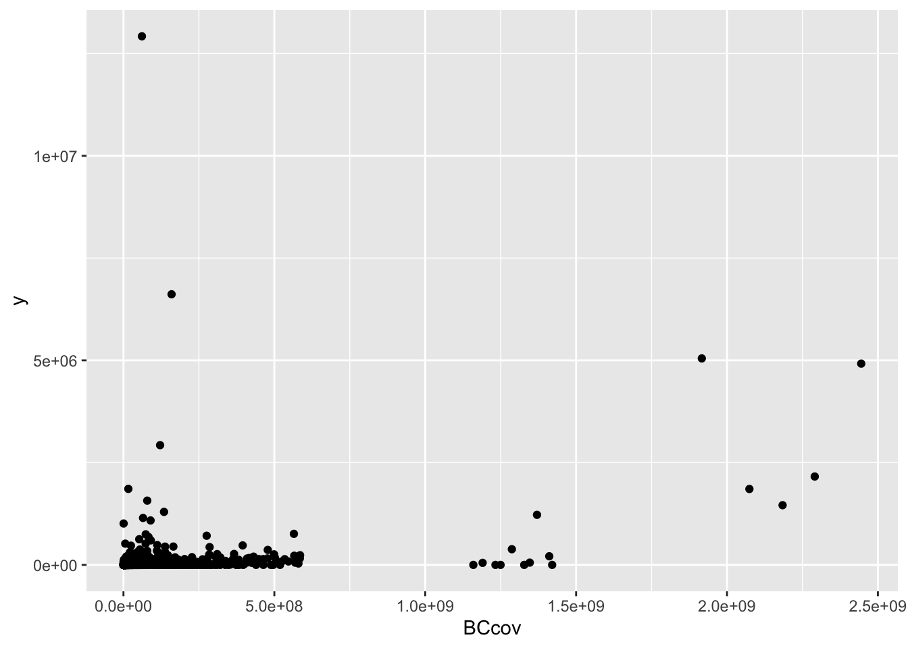
This plot places BCcov on the horizontal axis and y on the vertical axis. Each point represents an observation in the dataset. The plot provides an initial view of how claim amount varies with coverage, although the concentration of observations near zero or a small number of extreme values may make some patterns difficult to see.
The example illustrates the basic structure of a ggplot: the data and aesthetic mappings are supplied to ggplot(), while a geometric object determines how the observations are drawn.
Aesthetics describe the visual properties used to represent data. Common aesthetics include:
x and y for horizontal and vertical positions;colour for the colour of points, lines, or outlines;fill for the interior colour of bars and other filled shapes;size for the size of points or lines;shape for the shape of points.The aes() function maps variables to these visual properties. For example, we can use the deductible to colour the observations:
ggplot(claims, aes(x = BCcov, y = y, colour = factor(Deduct))) +
geom_point()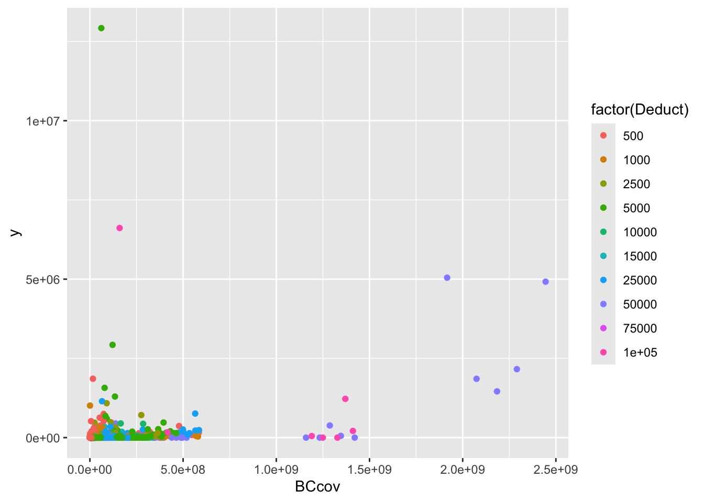
Using factor(Deduct) treats the deductible as a categorical variable for plotting, even though it is stored numerically. This is appropriate when the objective is to distinguish deductible categories rather than represent the deductible as a continuous numerical scale.
Aesthetic mappings should be distinguished from fixed settings. If every point should have the same colour, specify it outside aes():
ggplot(claims, aes(x = BCcov, y = y)) +
geom_point(colour = "steelblue")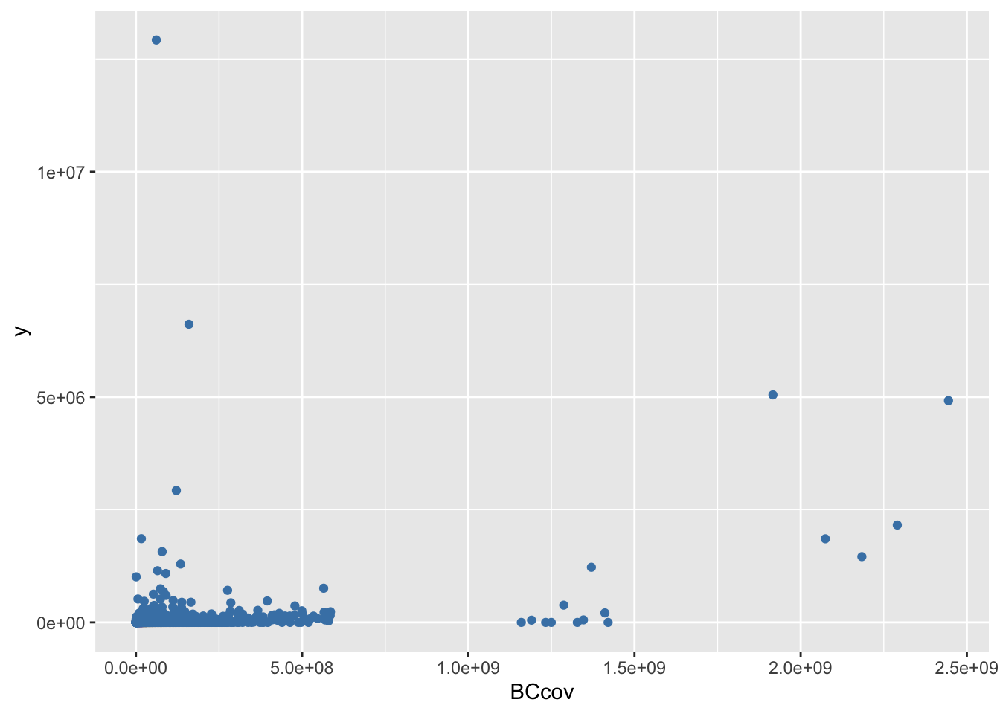
In the first example, colour represents a variable and a legend is generated. In the second, all points use the same specified colour, so no legend is required.
Geometric objects, or geoms, determine how observations are represented. Different types of data and analytical questions call for different geoms.
| Geom | Typical purpose |
|---|---|
geom_point() |
Explore relationships between two quantitative variables |
geom_bar() |
Display counts for categories |
geom_col() |
Display precomputed values for categories |
geom_histogram() |
Examine the distribution of a quantitative variable |
geom_density() |
Display a smoothed estimate of a distribution |
geom_boxplot() |
Compare distributions across groups |
geom_smooth() |
Show a smoothed trend in a relationship |
For example, we can examine the distribution of claim frequency using a histogram:
ggplot(claims, aes(x = Freq)) +
geom_histogram(binwidth = 1)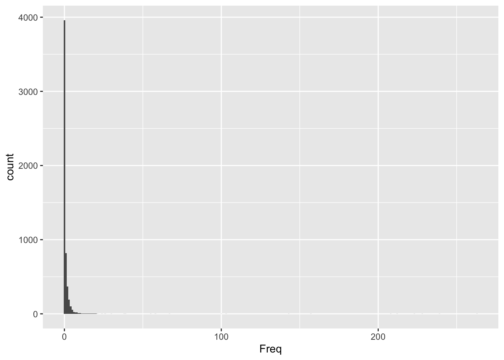
The histogram groups observations into intervals and displays the number of observations in each interval. Here, a bin width of 1 is suitable for exploring a discrete count variable such as Freq. Because claim frequency is a count, the resulting bars correspond to intervals of claim counts; later in the chapter, we will consider more suitable ways to display discrete frequency distributions.
The choice of geom depends on the question being investigated. A scatterplot is useful for examining relationships, while a histogram is intended to show a distribution. Choosing an appropriate geom is therefore an important part of constructing a meaningful visualization.
A ggplot can contain multiple layers. For example, we can add a smooth trend to the scatterplot of coverage and claim amount:
ggplot(claims, aes(x = BCcov, y = y)) +
geom_point() +
geom_smooth()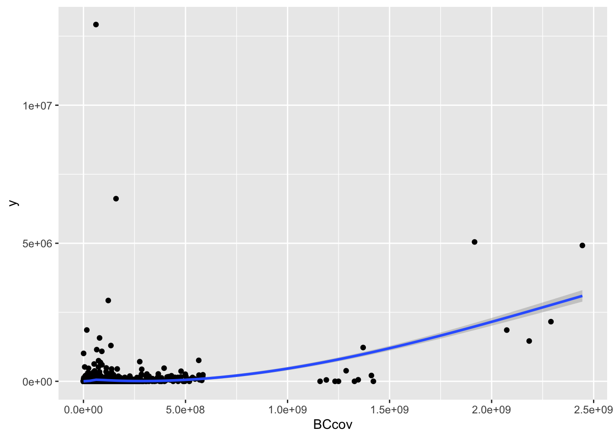
The first layer displays the observations. The second adds a smoothed trend, helping us see the general relationship between the two variables. By default, geom_smooth() chooses a smoothing method based on the size of the dataset and the type of relationship being modelled. The shaded region represents uncertainty around the estimated trend.
This trend is exploratory: it does not establish a causal relationship or replace a fitted regression model. Formal regression modelling will be considered in a later chapter.
A plot can also include labels and presentation settings:
ggplot(claims, aes(x = BCcov, y = y)) +
geom_point() +
labs(
title = "Claim Amount and Insurance Coverage",
x = "Insurance coverage",
y = "Claim amount"
) +
theme_minimal()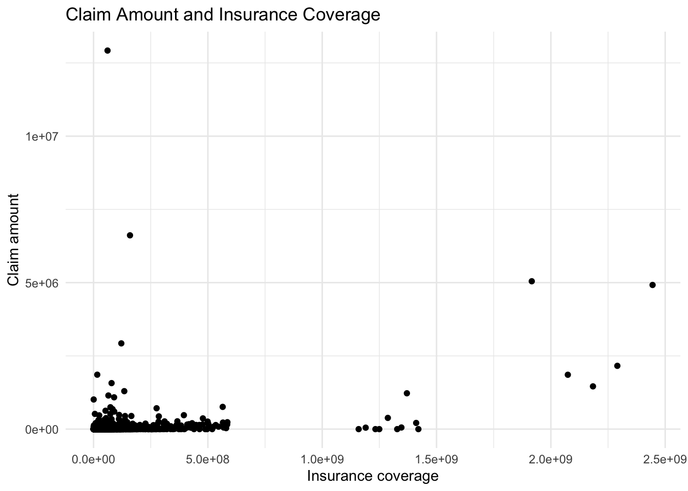
The labs() function specifies the title and axis labels, while theme_minimal() changes the overall appearance of the plot. Clear labels help readers understand what is being displayed without having to refer back to the code.
The following table summarizes the components introduced in this section and how they contribute to a plot.
| Component | Main role | Example |
|---|---|---|
| Data | Supplies the observations | claims |
| Aesthetics | Maps variables to visual properties | aes(x = BCcov, y = y) |
| Geoms | Determines how observations are drawn | geom_point() |
| Scales | Controls how data values are represented visually | scale_colour_manual() |
| Statistics | Computes quantities used in a layer | Counting observations or smoothing a trend |
| Facets | Splits a plot into panels by groups | facet_wrap(~Year) |
| Labels and themes | Improves communication and appearance | labs() and theme_minimal() |
These components do not all need to be specified in every plot. A basic visualization may require only data, aesthetic mappings, and a geom. Scales, statistical transformations, and facets can be added when they serve a clear analytical purpose.
In the following sections, we will introduce these components in context. Bar charts will be used to explore categorical variables, distribution plots will examine quantitative variables, and scatterplots and facets will help investigate relationships and differences across insurance risk groups.
Categorical variables describe groups or classes, such as deductible levels, policy types, and calendar years. Bar charts are useful for comparing the number of observations in each category and examining how the distribution of categories changes across groups.
In ggplot2, two functions are particularly useful for constructing bar charts:
geom_bar() counts observations in each category automatically.geom_col() displays values that have already been calculated.We begin by examining the distribution of deductible levels in the claims dataset. Although Deduct is stored numerically, we treat it as a categorical variable because the objective is to compare the number of observations at each deductible level.
library(ggplot2)
ggplot(claims, aes(x = factor(Deduct))) +
geom_bar()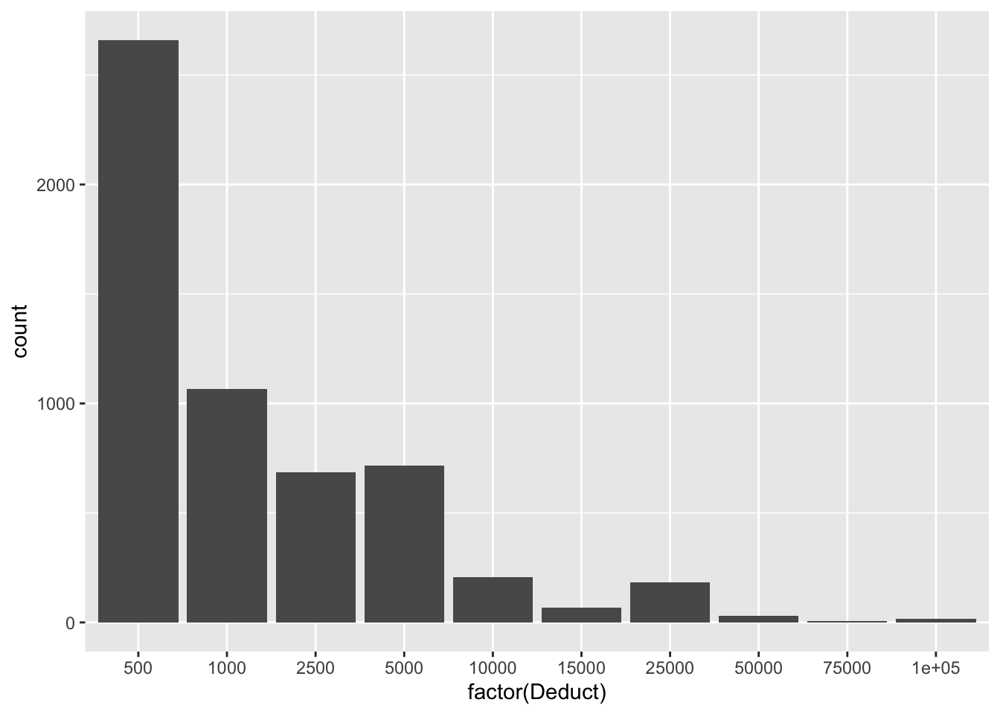
The horizontal axis shows the deductible categories, while the vertical axis shows the number of observations in each category. By default, geom_bar() counts the observations associated with each category.
This plot provides a simple summary of the portfolio’s deductible distribution. For example, it can reveal whether most observations are concentrated in a small number of deductible categories.
The factor() function converts Deduct into a categorical variable for plotting. This is useful when the numerical values represent distinct levels rather than a continuous scale.
We can improve the presentation by adding a title and descriptive axis labels.
ggplot(claims, aes(x = factor(Deduct))) +
geom_bar(fill = "steelblue") +
labs(
title = "Distribution of Deductible Levels",
x = "Deductible",
y = "Number of observations"
) +
theme_minimal()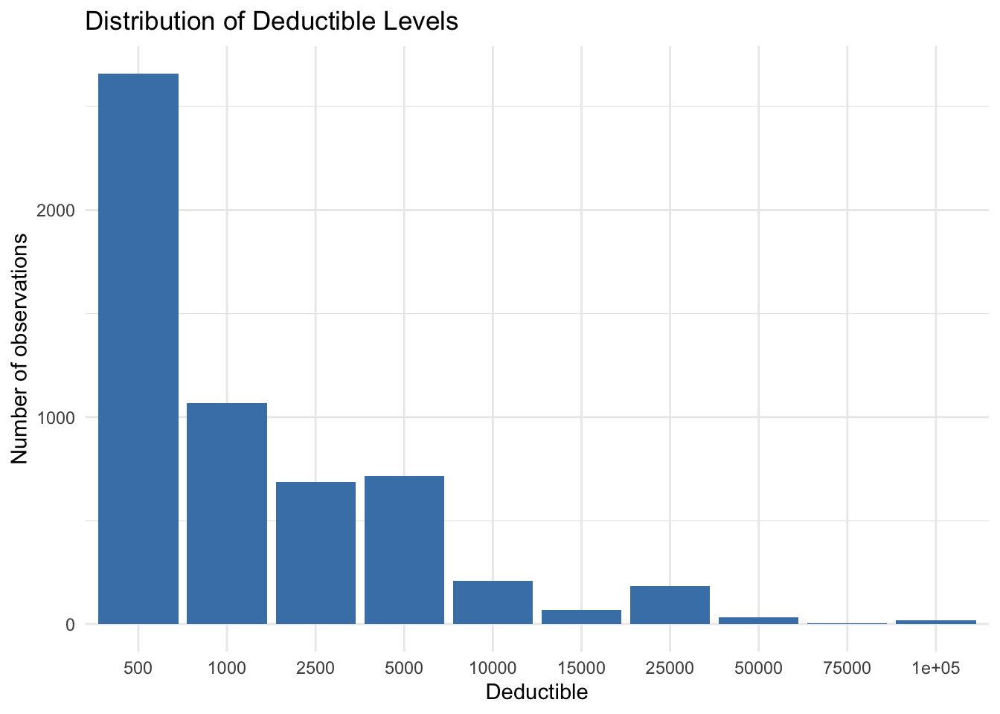
Here, fill = "steelblue" is a fixed setting rather than an aesthetic mapping. All bars have the same colour, so no legend is needed.
Bar charts can also compare categories across groups. For example, we can examine the number of observations at each deductible level in different years.
ggplot(claims, aes(x = factor(Deduct), fill = factor(Year))) +
geom_bar(position = "dodge") +
labs(
title = "Deductible Distribution by Year",
x = "Deductible",
y = "Number of observations",
fill = "Year"
) +
theme_minimal()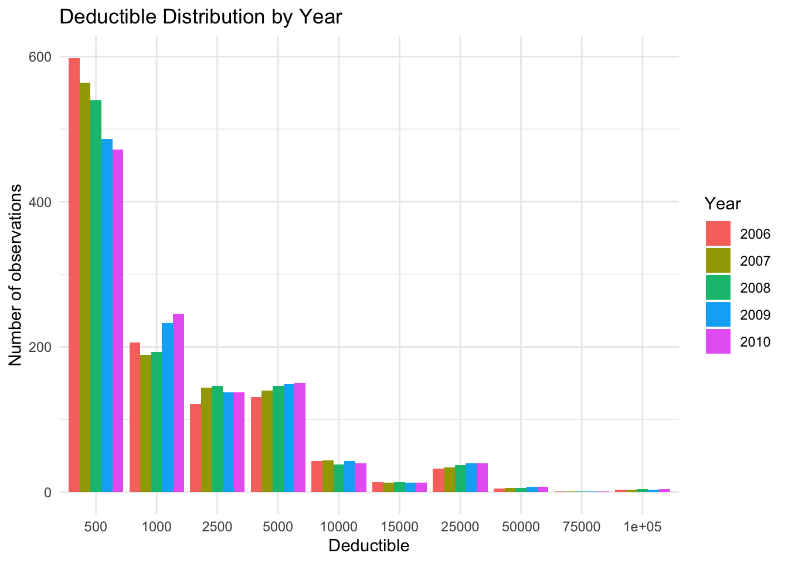
The argument position = "dodge" places bars for different years side by side within each deductible category. This makes it easier to compare counts across years than when the bars overlap.
However, differences in counts do not necessarily imply changes in the portfolio’s deductible mix. The number of observations may also change from year to year. Comparing proportions can help distinguish changes in portfolio size from changes in the relative distribution of deductible levels.
Counts describe the number of observations in each category. Proportions describe the share of observations belonging to each category.
We first calculate the number of observations at each deductible level and then divide by the total number of observations.
library(dplyr)
deductible_summary <- claims |>
filter(!is.na(Deduct)) |>
count(Deduct) |>
mutate(proportion = n / sum(n))
deductible_summary# A tibble: 10 × 3
Deduct n proportion
<dbl> <int> <dbl>
1 500 2660 0.472
2 1000 1067 0.189
3 2500 685 0.121
4 5000 716 0.127
5 10000 208 0.0369
6 15000 67 0.0119
7 25000 183 0.0325
8 50000 31 0.00550
9 75000 5 0.000887
10 100000 17 0.00301 The variable n contains the number of observations in each deductible category, while proportion gives the corresponding share of the observed portfolio. The proportions sum to 1, apart from possible rounding when displayed.
We can use geom_col() to display these precomputed proportions.
ggplot(deductible_summary,
aes(x = factor(Deduct), y = proportion)) +
geom_col(fill = "steelblue") +
labs(
title = "Proportion of Observations by Deductible",
x = "Deductible",
y = "Proportion"
) +
theme_minimal()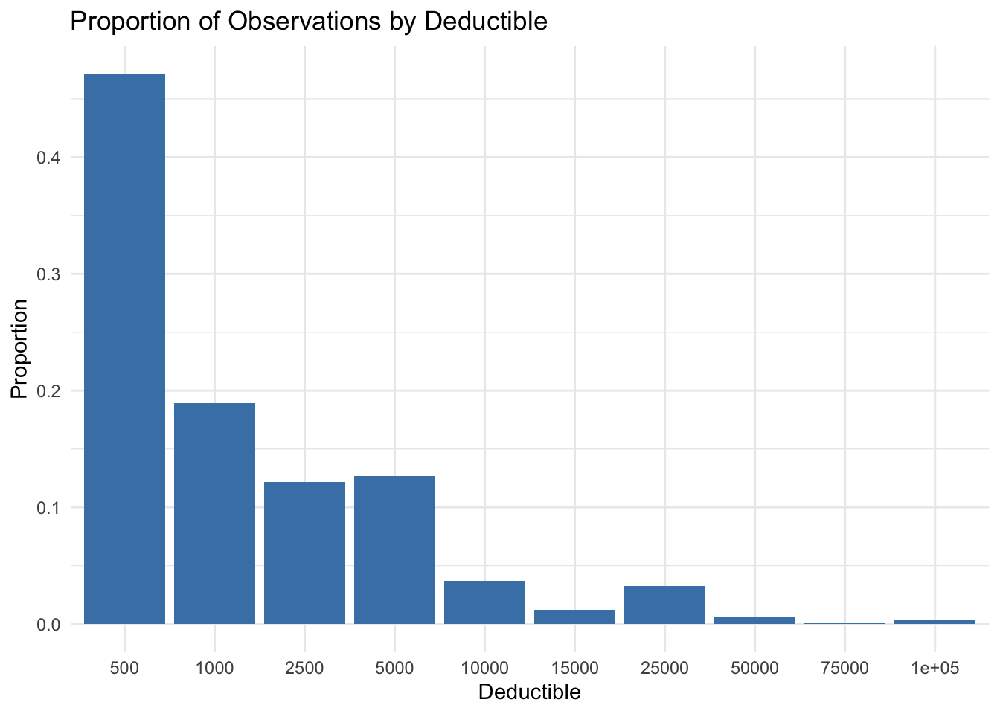
Unlike geom_bar(), geom_col() does not count observations. It uses the values supplied through the y aesthetic, which in this example are the calculated proportions.
Proportions are particularly useful when comparing groups of different sizes. For example, two years may have different numbers of policy observations but similar proportions across deductible categories.
To examine whether the deductible mix changes over time, we calculate the proportion of observations in each deductible category separately for each year.
deductible_by_year <- claims |>
filter(!is.na(Deduct)) |>
count(Year, Deduct) |>
group_by(Year) |>
mutate(proportion = n / sum(n)) |>
ungroup()
ggplot(deductible_by_year,
aes(x = factor(Deduct),
y = proportion,
fill = factor(Year))) +
geom_col(position = "dodge") +
labs(
title = "Deductible Proportions by Year",
x = "Deductible",
y = "Proportion within year",
fill = "Year"
) +
theme_minimal()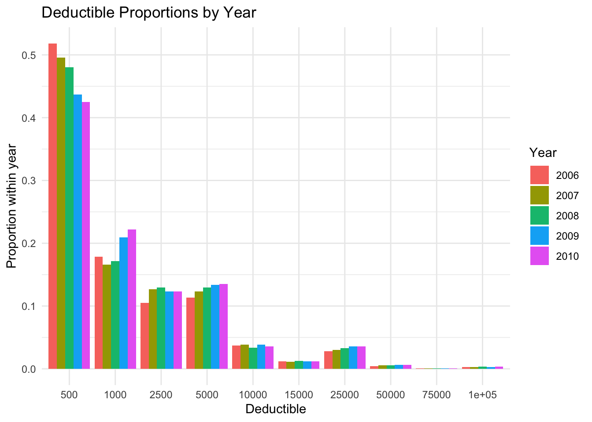
Within each year, the proportions across the observed deductible categories sum to 1. The plot therefore compares the relative composition of the portfolio rather than the total number of observations.
If there are many years, however, the grouped bars can become difficult to read. A faceted plot or a proportional stacked bar chart may be more appropriate when the objective is to compare the composition of several groups.
The choice between counts and proportions depends on the question being investigated.
| Objective | Suitable display | Interpretation |
|---|---|---|
| Compare the number of observations in each category | geom_bar() |
Shows category counts |
| Display calculated counts or proportions | geom_col() |
Uses values already computed |
| Compare portfolio size across years | Bar chart of counts | Shows differences in the number of observations |
| Compare the relative composition of groups | Bar chart of proportions | Shows differences in category shares |
A count is appropriate when portfolio size is itself of interest. A proportion is more informative when the objective is to compare the relative composition of groups of different sizes.
In actuarial applications, this distinction is important. An increase in the number of policies with a particular deductible may reflect portfolio growth rather than a change in policyholder preferences.
Quantitative variables describe numerical measurements, such as claim frequency, claim amount, and insurance coverage. Visualizing their distributions helps us understand where observations are concentrated, how much variation exists, whether the data are skewed, and whether some observations are unusually large or small.
In actuarial work, these features matter because insurance data often contain many small or zero values alongside a small number of large claims. Different plots emphasize different aspects of a distribution. We will use histograms, density plots, and boxplots to explore these features.
A histogram divides a quantitative variable into intervals, called bins, and displays the number of observations falling within each interval. It is useful for examining the shape and spread of a distribution.
We begin with Freq, which records claim frequency in the claims dataset.
ggplot(claims, aes(x = Freq)) +
geom_histogram(
binwidth = 1,
boundary = -0.5,
fill = "steelblue",
colour = "white"
) +
labs(
title = "Distribution of Claim Frequency",
x = "Number of claims",
y = "Number of observations"
) +
theme_minimal()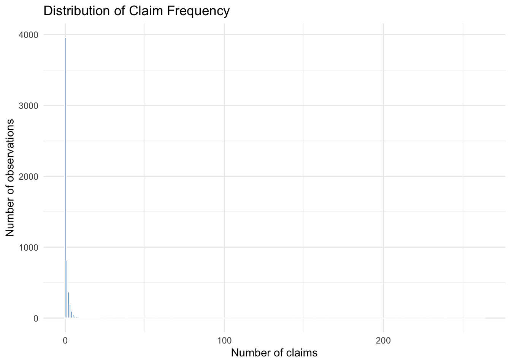
Because claim frequency is a discrete count, a bin width of 1 with the boundary set at \(-0.5\) places each integer claim count at the centre of a bin. This makes the plot easier to interpret than a histogram whose intervals divide the integer values inconsistently.
The distribution shows how observations are spread across different claim counts. In insurance portfolios, zero claims are often common, while higher claim counts occur less frequently. The histogram helps reveal this concentration and the extent of the upper tail.
For a discrete variable such as Freq, a bar chart using geom_bar() is also appropriate. The histogram is useful here for introducing the general idea of a distribution and the role of bin width, but the bar chart more directly represents the distinct claim counts.
Example 5.1 Example: Displaying claim frequency
A histogram of claim frequency may show a large concentration of observations near zero. Because claim frequency takes non-negative integer values, a bar chart provides a direct comparison of the number of observations at each count.
ggplot(claims, aes(x = factor(Freq))) +
geom_bar(fill = "steelblue") +
labs(
title = "Number of Policies by Claim Frequency",
x = "Number of claims",
y = "Number of policies"
) +
theme_minimal()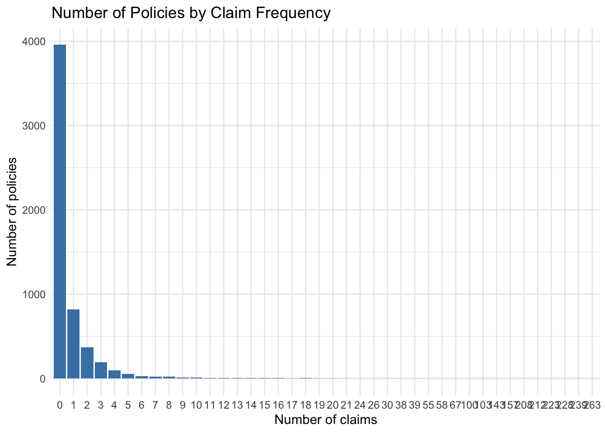
Each bar represents a distinct claim count. A tall bar at zero indicates that many observations have no claims, while shorter bars at higher counts show how frequently multiple claims occur.
This example illustrates why a bar chart is often appropriate for discrete count data.
Example 5.2 Example: Grouping high claim frequencies
A small number of observations may have very high claim frequencies. To make the distribution easier to read, we group all observations with 10 or more claims into a single category, labelled 10+.
library(dplyr)
claims_grouped <- claims |>
filter(!is.na(Freq)) |>
mutate(
Freq_group = if_else(
Freq >= 10,
"10+",
as.character(Freq)
),
Freq_group = factor(
Freq_group,
levels = c(as.character(0:9), "10+")
)
)
ggplot(claims_grouped, aes(x = Freq_group)) +
geom_bar(fill = "steelblue") +
labs(
title = "Distribution of Claim Frequency",
x = "Number of claims",
y = "Number of observations"
) +
theme_minimal()The plot displays separate bars for claim frequencies from 0 to 9 and one bar for all frequencies of 10 or more. This makes the main part of the distribution easier to read while retaining the information that a small number of observations have high claim frequencies.
Grouping is a presentation choice: the original Freq values remain unchanged in claims. The grouped variable should be used for this visualization, not as a replacement for the original claim frequency in statistical analysis.
We next examine the distribution of y, which records claim amount in the dataset. For this example, we focus on positive claim amounts to study the distribution of amounts when a positive amount is recorded.
claims_positive <- claims |>
filter(!is.na(y), y > 0)
ggplot(claims_positive, aes(x = y)) +
geom_histogram(
bins = 30,
fill = "steelblue",
colour = "white"
) +
labs(
title = "Distribution of Positive Claim Amounts",
x = "Claim amount",
y = "Number of observations"
) +
theme_minimal()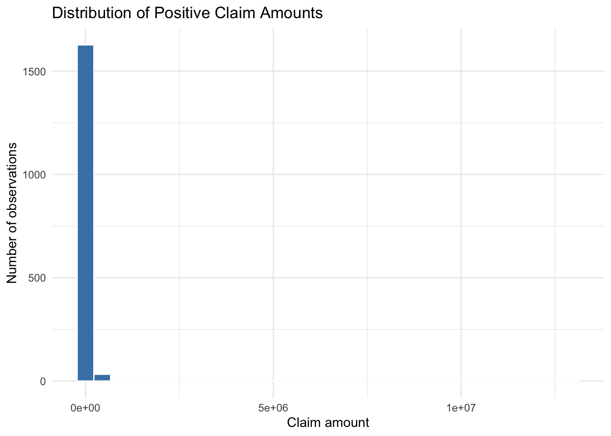
The histogram provides an initial view of the distribution of positive claim amounts. Insurance claim amounts commonly exhibit right skewness: many claims have relatively small amounts, while a smaller number have much larger amounts. These large claims extend the distribution’s right tail.
The appearance of a histogram depends on the choice of bin width or number of bins. Too few bins can conceal important features, while too many can make random variation appear more prominent than it is. It is therefore useful to try different settings and check whether the main features of the distribution remain visible.
For example, we can increase the number of bins to examine the distribution in greater detail.
ggplot(claims_positive, aes(x = y)) +
geom_histogram(
bins = 60,
fill = "steelblue",
colour = "white"
) +
labs(
title = "Positive Claim Amounts with More Bins",
x = "Claim amount",
y = "Number of observations"
) +
theme_minimal()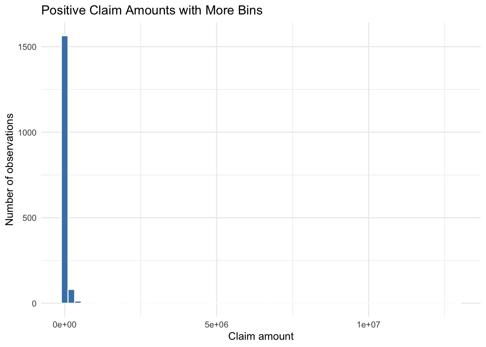
The two histograms may reveal different levels of detail, but neither is automatically better. The choice should help readers understand the overall distribution without obscuring its important features.
Example 5.3 Example: Examining claim amounts on a logarithmic scale
When a few large claims stretch the horizontal axis, smaller claim amounts can become difficult to distinguish. A logarithmic transformation can make the distribution easier to examine.
ggplot(claims_positive, aes(x = log10(y))) +
geom_histogram(
bins = 30,
fill = "steelblue",
colour = "white"
) +
labs(
title = "Distribution of Log-Transformed Claim Amounts",
x = expression(log[10]("Claim amount")),
y = "Number of observations"
) +
theme_minimal()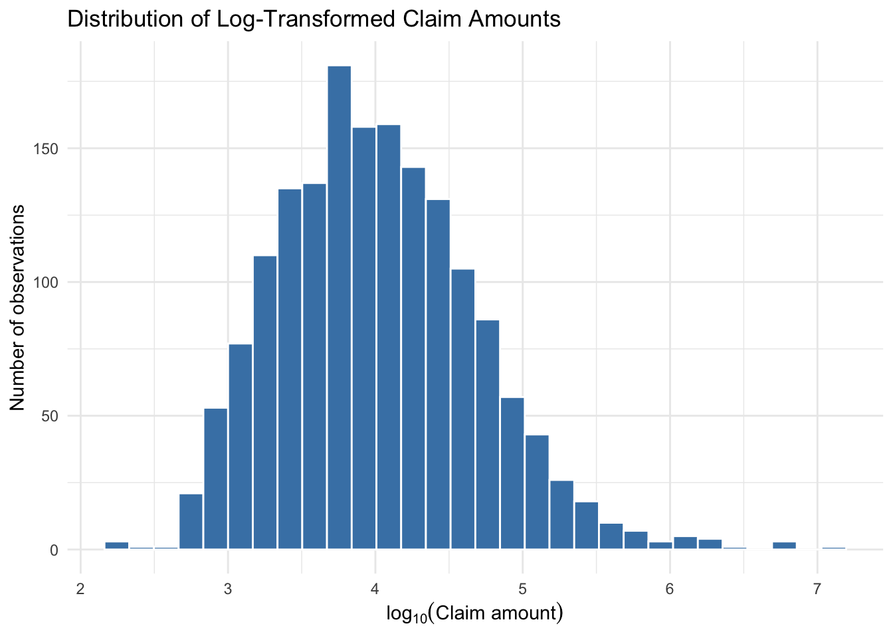
For example, claim amounts of 100, 1,000, and 10,000 become 2, 3, and 4 on the logarithmic scale. This can reveal differences among smaller and moderate claims that are less apparent on the original scale.
The horizontal axis now represents log-transformed amounts rather than monetary values. The transformation changes the appearance of the distribution but does not remove extreme claims.
A density plot provides a smoothed representation of a quantitative distribution. Unlike a histogram, which groups observations into bins, a density plot estimates how the observations are distributed across the range of values.
We can use geom_density() to examine the distribution of positive claim amounts.
ggplot(claims_positive, aes(x = y)) +
geom_density(fill = "steelblue", alpha = 0.4) +
labs(
title = "Density of Positive Claim Amounts",
x = "Claim amount",
y = "Density"
) +
theme_minimal()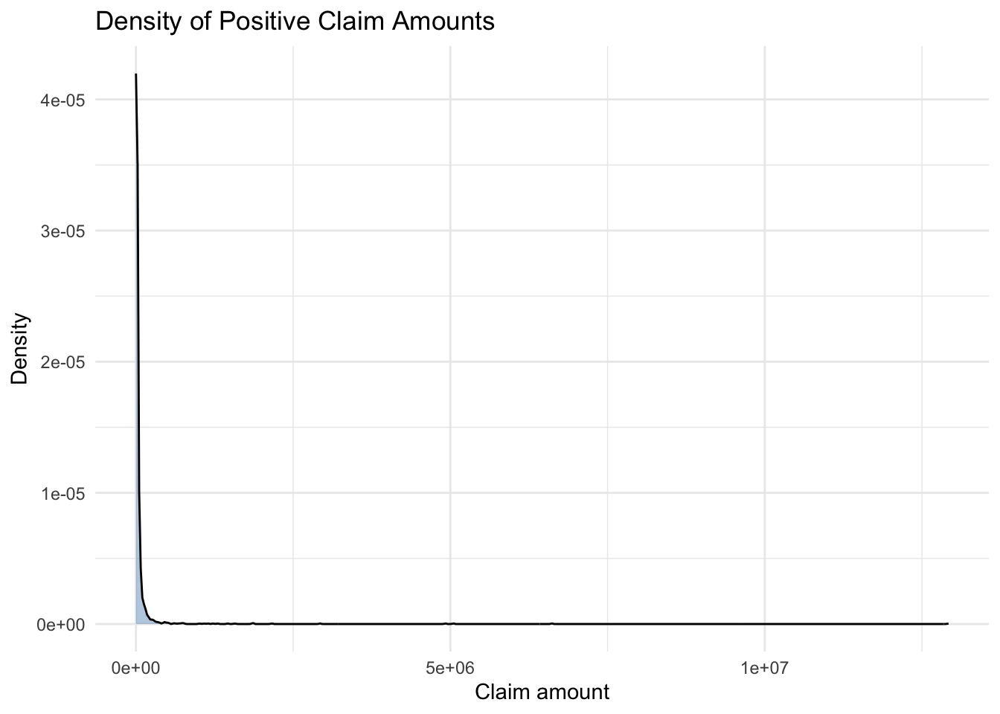
The density curve provides a smooth view of where claim amounts are concentrated. Peaks indicate regions with relatively high estimated density, while low regions indicate values that occur less frequently relative to nearby values.
Density is not the same as the number or proportion of observations at a particular value. The total area under a density curve is 1, so the area over an interval represents the estimated proportion of observations within that interval. The height of the curve at a single point is not itself a probability.
The degree of smoothing depends on a parameter called the bandwidth. A smaller bandwidth produces a more detailed curve, while a larger bandwidth produces a smoother curve. As with histogram bin width, the smoothing choice affects the appearance of the plot.
Density plots are particularly useful for comparing distributions on a common scale. However, they should be interpreted carefully for discrete variables or variables with a large concentration of observations at zero. For claim frequency, a bar chart is generally more suitable.
Example 5.4 Example: Density of log-transformed claim amounts
A density plot of log-transformed claim amounts provides a smoothed view of the distribution on the logarithmic scale.
ggplot(claims_positive, aes(x = log10(y))) +
geom_density(
fill = "steelblue",
alpha = 0.4
) +
labs(
title = "Density of Log-Transformed Claim Amounts",
x = expression(log[10]("Claim amount")),
y = "Density"
) +
theme_minimal()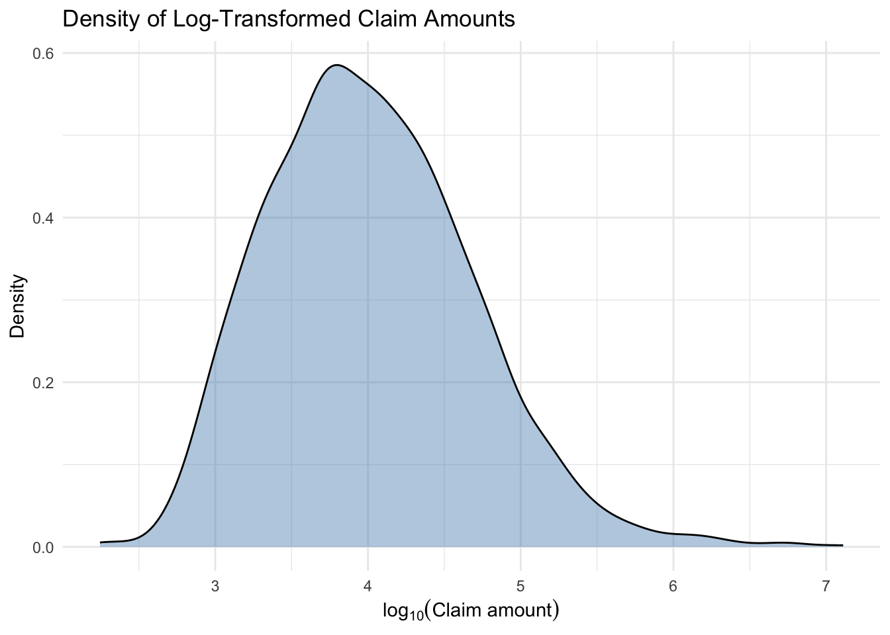
The transformed plot may make the central structure of the distribution easier to see. The total area under the density curve remains 1, but the density is now measured on the logarithmic scale, not per unit of the original claim amount.
A boxplot summarizes a distribution using its median, quartiles, and potential outliers. It is particularly useful for comparing a quantitative variable across groups.
The box represents the interquartile range (IQR), from the first quartile \(Q_1\) to the third quartile \(Q_3\). The line inside the box marks the median, \(Q_2\). The IQR is
\[ \mathrm{IQR} = Q_3 - Q_1. \]
The whiskers typically extend to the most extreme observations within \(1.5 \times \mathrm{IQR}\) of the corresponding quartile. Observations beyond the whiskers are plotted individually and flagged as potential outliers.
We can compare positive claim amounts across years using a boxplot.
ggplot(
claims_positive,
aes(x = factor(Year), y = y)
) +
geom_boxplot(fill = "steelblue", alpha = 0.7) +
labs(
title = "Positive Claim Amounts by Year",
x = "Year",
y = "Claim amount"
) +
theme_minimal()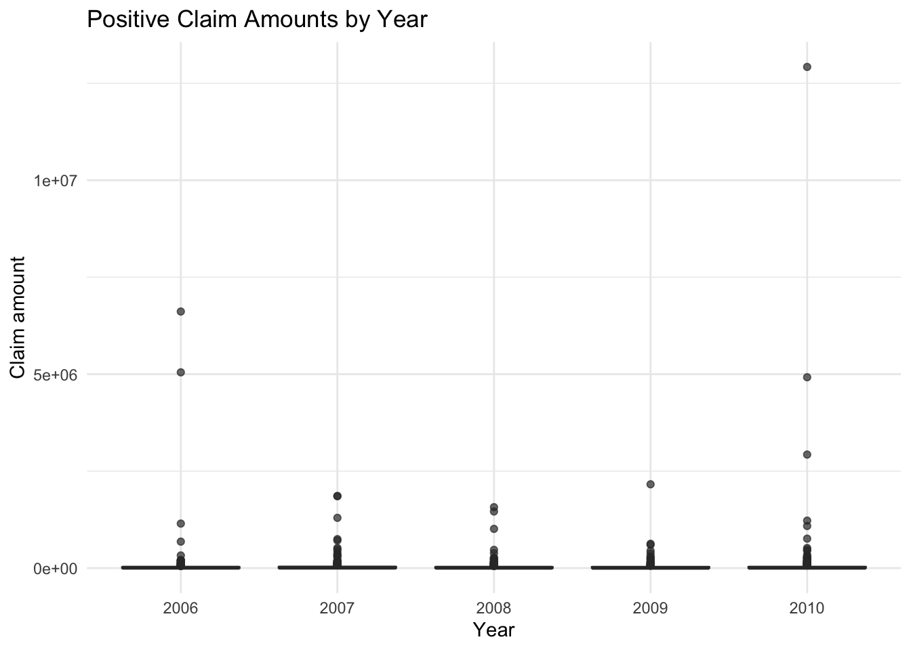
This plot allows us to compare the median claim amount, the spread of the central half of the observations, and the presence of unusually large claims across years. If the distributions are strongly right-skewed, a small number of large claims may appear far above the boxes and make differences in the central distributions difficult to see.
A boxplot provides a compact summary, but it does not show the full shape of a distribution. Histograms and density plots can reveal features that a boxplot may conceal, such as multiple peaks or concentrations near particular values.
An unusual observation is not necessarily an error. In insurance data, an unusually large claim may be genuine and important for understanding the insurer’s exposure to severe losses.
Boxplots identify potential outliers according to a statistical rule. They do not establish that an observation is incorrect, nor do they identify every observation that deserves investigation.
When an unusual claim amount is found, an actuary should consider whether it reflects a genuine large loss, a data-entry error, an incorrect unit, or another recording issue. The appropriate response depends on the context and the purpose of the analysis.
Example 5.5 Example: Comparing claim amounts using boxplots
Claim amounts can be strongly right-skewed, with a small number of large claims making differences between the central portions of the distributions difficult to see. A logarithmic vertical scale can make these differences easier to examine.
ggplot(
claims_positive,
aes(x = factor(Year), y = y)
) +
geom_boxplot(
fill = "steelblue",
alpha = 0.6,
outlier.shape = NA
) +
geom_jitter(
width = 0.15,
alpha = 0.2,
size = 1
) +
scale_y_log10() +
labs(
title = "Positive Claim Amounts by Year",
x = "Year",
y = "Claim amount (logarithmic scale)"
) +
theme_minimal()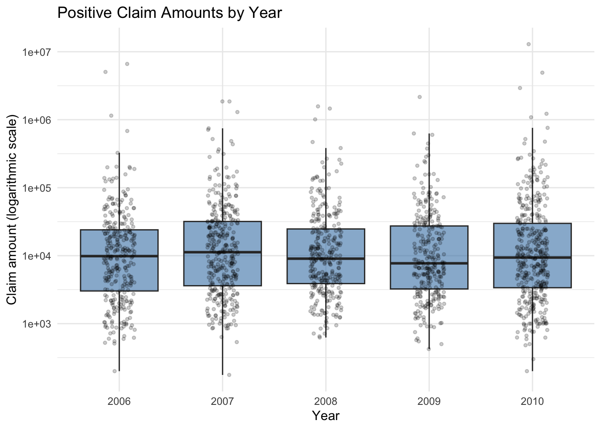
The boxplots compare the median and interquartile range of positive claim amounts across years. The jittered points show individual observations, with a small horizontal displacement to reduce overlap.
The logarithmic scale makes variation among smaller claims easier to see when claim amounts span a wide range. Because the scale is logarithmic, equal vertical distances represent equal ratios rather than equal differences in claim amounts.
The boxplot’s potential outliers are suppressed in this example to avoid plotting them twice: the individual observations are already displayed by geom_jitter(). These points may overlap, so the plot should be interpreted as an exploratory display rather than an exact count of observations at each value.
The following table summarizes the main uses of the three plots introduced in this section.
| Plot | Main purpose | Important consideration |
|---|---|---|
| Histogram | Examine the shape and spread of a distribution | Appearance depends on bin width |
| Density plot | View a smoothed distribution and compare shapes | Depends on bandwidth; total area equals 1 |
| Boxplot | Summarize a distribution and compare groups | Does not show the full distribution shape |
These plots complement one another. A histogram or density plot helps reveal the overall distribution, while a boxplot provides a compact summary and makes comparisons across groups convenient. In actuarial applications, using them together can help identify important distributional features before fitting a statistical model.
Actuaries often need to investigate how one variable is associated with another. For example, claim amounts may vary with insurance coverage, while insurance charges may differ with age. Visualizing these relationships helps identify patterns, unusual observations, and potential nonlinear relationships before fitting a statistical model.
A scatterplot displays the relationship between two quantitative variables. Each point represents one observation, with its horizontal and vertical positions determined by the values of the two variables.
In ggplot2, geom_point() creates a scatterplot.
We begin with the claims dataset introduced earlier in the course. Suppose we want to examine the relationship between insurance coverage and claim amount.
ggplot(claims, aes(x = LnCoverage, y = y)) +
geom_point()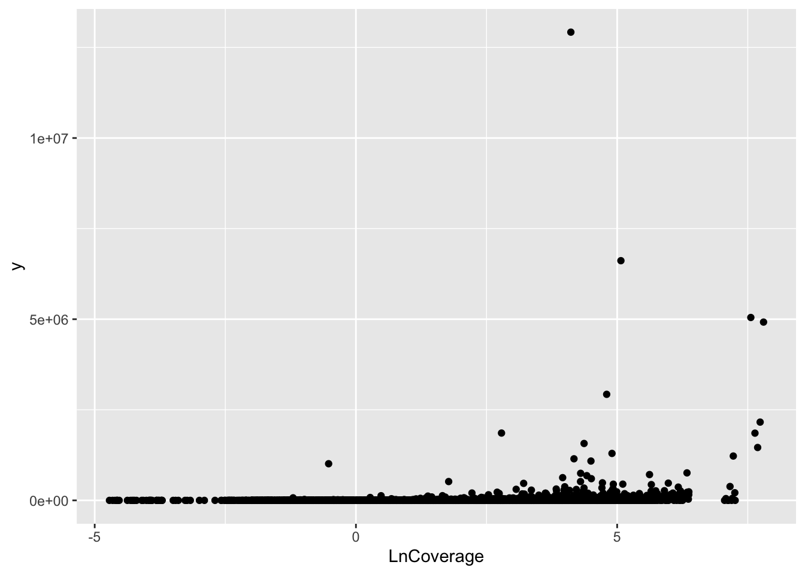
Here, LnCoverage represents the logarithm of insurance coverage, while y represents the claim amount. Each point corresponds to an observation in the dataset.
The scatterplot allows us to examine whether larger coverage amounts tend to be associated with larger claims. However, the presence of a few very large claims may make the overall pattern difficult to see. Many observations may also overlap, particularly when claim amounts are concentrated near zero.
Example 5.6 Example: Examining claim amounts
Suppose the scatterplot shows that most claims are small, while a few observations have very large claim amounts. These extreme observations may dominate the vertical scale and make the majority of the data appear compressed near the bottom of the plot.
The first step is to examine the original data rather than immediately remove extreme observations. Large claims may be genuine insurance losses and can be important for actuarial analysis.
Scatterplots can display additional information by mapping other variables to visual properties such as colour, shape, or size. For example, colour can distinguish observations belonging to different policy groups.
Suppose we want to examine whether the relationship between coverage and claim amount differs across policy years.
ggplot(claims, aes(x = LnCoverage, y = y, colour = factor(Year))) +
geom_point(alpha = 0.6) +
labs(
x = "Logarithm of coverage",
y = "Claim amount",
colour = "Policy year"
)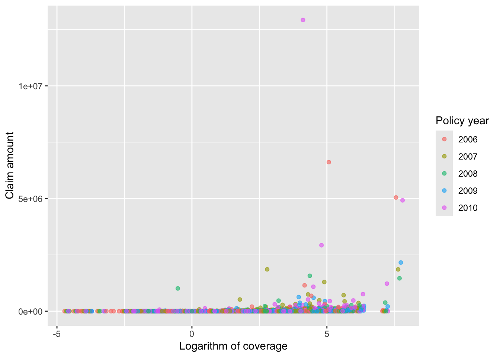
The mapping colour = factor(Year) treats Year as a categorical variable, assigning a separate colour to each year. The alpha argument makes the points partially transparent, which can help reveal areas where observations overlap.
Aesthetic mappings should be selected carefully. Adding too many colours or shapes can make a plot difficult to interpret. When the main objective is to investigate the relationship between two quantitative variables, additional aesthetics should provide information relevant to the question.
A scatterplot shows individual observations, but the overall relationship may be difficult to identify when the data are noisy or heavily concentrated in certain regions. A smooth trend line can help reveal the general pattern.
The function geom_smooth() adds a fitted trend line to a plot. By default, ggplot2 selects a smoothing method based on the size of the dataset. For a small or moderate dataset, it commonly uses a locally estimated smooth curve; for larger datasets, it commonly uses a generalized additive model.
ggplot(claims, aes(x = LnCoverage, y = y)) +
geom_point(alpha = 0.4) +
geom_smooth()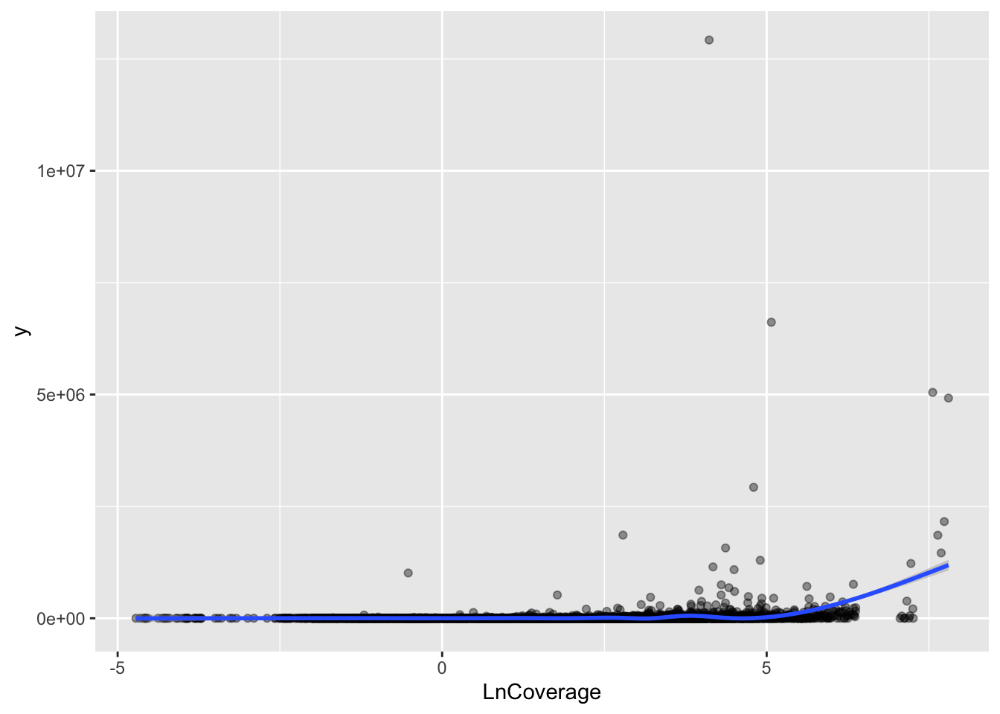
The shaded region around the line represents an approximate confidence interval for the estimated mean response. It describes uncertainty in the fitted trend, not the range within which individual claim amounts are expected to fall.
The smooth line helps us assess whether the relationship appears approximately linear or whether it exhibits curvature. However, it does not establish a causal relationship between coverage and claim amount.
When a straight-line trend is appropriate, we can request a linear fit explicitly.
ggplot(claims, aes(x = LnCoverage, y = y)) +
geom_point(alpha = 0.4) +
geom_smooth(method = "lm", se = TRUE)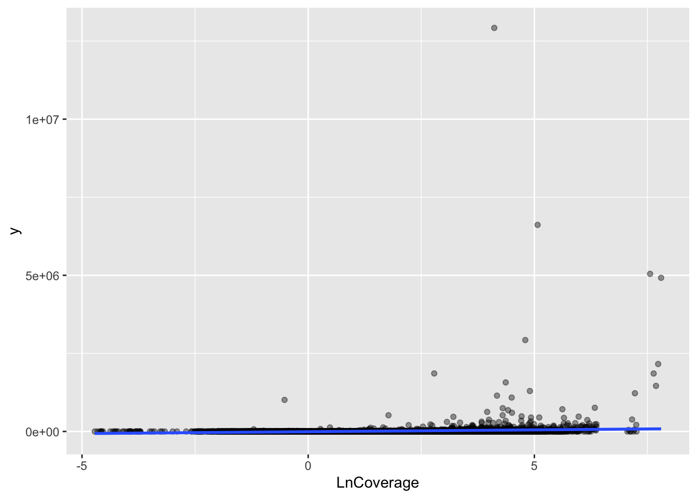
The argument method = "lm" fits a linear regression line, while se = TRUE displays its confidence band. Comparing a linear fit with a flexible smooth curve can help identify departures from linearity before choosing a regression model.
Claim amounts and insurance charges are often right-skewed: most observations are relatively small, while a small number are much larger. When plotted on their original scales, these large values can dominate the axes and obscure patterns among the majority of observations.
One option is to use a logarithmic axis. For example, if claim amounts are positive, we can display them on a logarithmic scale.
ggplot(filter(claims, y > 0), aes(x = LnCoverage, y = y)) +
geom_point(alpha = 0.4) +
geom_smooth() +
scale_y_log10() +
labs(y = "Claim amount (logarithmic scale)")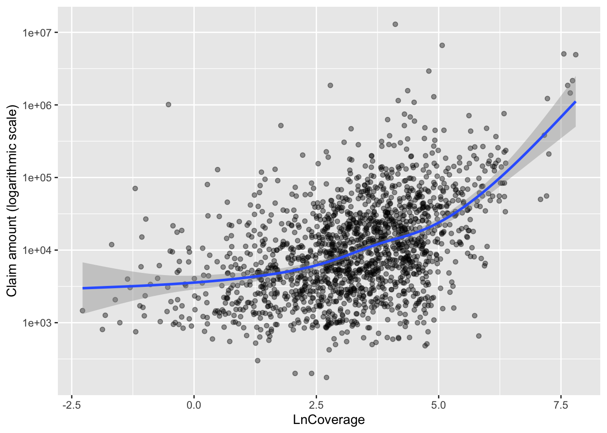
The condition y > 0 excludes zero and negative values because a logarithmic scale cannot display them. This is appropriate only if the purpose is to study positive claim amounts; the excluded observations should still be considered when interpreting the dataset as a whole.
The function scale_y_log10() changes the display scale of the vertical axis. It does not replace the original values in the dataset. Large claims remain visible, but their distances from smaller claims are compressed, making variation among smaller and moderate claims easier to examine.
Important distinction: Using a logarithmic axis is not the same as fitting a model to logarithmically transformed claim amounts. The former changes how the data are displayed, while the latter changes the response variable and therefore the model being fitted.
Not all relationships are linear. A scatterplot may reveal curvature, a change in variability, or a pattern that differs across ranges of the explanatory variable. A smooth trend line can help identify these features.
Overplotting occurs when multiple observations occupy the same or similar positions, causing points to obscure one another. This is common when variables take only a limited number of values or when observations are concentrated in a narrow region.
Several techniques can improve readability:
alpha to make points transparent and reveal areas of high concentration.geom_jitter() when observations overlap because of repeated or discrete values. Jitter adds small random displacements, so it should be used cautiously when exact positions matter.Extreme observations also require careful interpretation. They may represent genuine large claims, data-entry errors, or unusual policy characteristics. A plot can identify observations worth investigating, but it cannot determine their cause by itself.
When examining a scatterplot, consider the direction, form, and strength of the relationship. A positive association means that larger values of one variable tend to occur with larger values of the other; a negative association means that larger values of one tend to occur with smaller values of the other. The form may be approximately linear or nonlinear, while the strength describes how closely the observations follow the overall pattern.
For actuarial applications, these observations can guide subsequent modelling. For example, a curved relationship between age and insurance charges may suggest that a simple linear model is insufficient. A strong concentration of small claims alongside a few very large claims may indicate that the distribution and scale of the response deserve further attention.
Visual evidence should be interpreted alongside numerical summaries and knowledge of the insurance context. Association does not imply causation, and a visible pattern alone does not establish which statistical model is appropriate.
Actuaries often compare claim experience across groups of policyholders or policies. For example, claim frequency may differ by policy type, while claim amounts may vary across policy characteristics. Visualizations help reveal differences in distributions, central values, variability, and unusual observations.
The appropriate plot depends on the types of variables involved. Bar charts are useful for comparing counts or proportions of categorical outcomes, while boxplots and other distribution plots are useful for comparing quantitative outcomes across groups.
A boxplot summarizes the distribution of a quantitative variable. The box extends from the first quartile (\(Q_1\)) to the third quartile (\(Q_3\)), with a line marking the median. The interquartile range is
\[ \mathrm{IQR} = Q_3 - Q_1. \]
The whiskers extend to the most extreme observations within \(1.5\,\mathrm{IQR}\) of the quartiles. Observations beyond the whiskers are plotted individually and are often described as potential outliers. They are not necessarily data errors.
Suppose we want to compare claim amounts across policy years using the claims dataset.
ggplot(claims, aes(x = factor(Year), y = y)) +
geom_boxplot() +
labs(
x = "Policy year",
y = "Claim amount"
)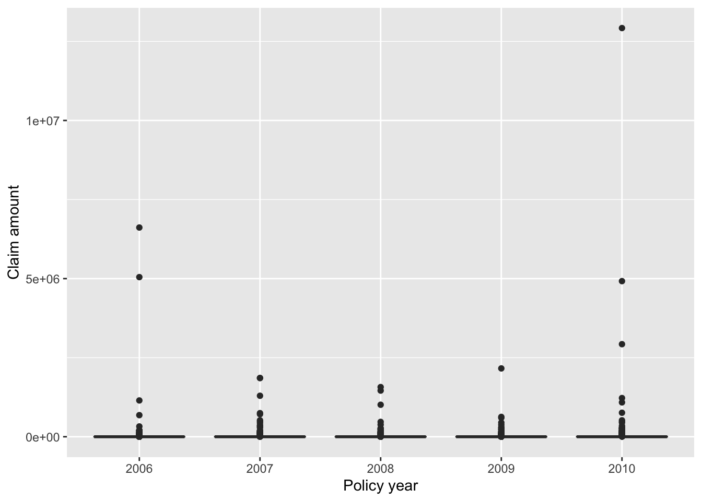
The function factor(Year) treats policy year as a categorical variable, allowing us to compare the distributions across years rather than treating year as a continuous explanatory variable.
The plot helps us compare the median claim amount, the spread of the central half of observations, and the presence of unusually large claims. However, claim amounts are often strongly right-skewed. A small number of large claims can make the boxes appear compressed near the bottom of the plot.
A boxplot also does not show the full shape of a distribution. Two groups can have similar medians and interquartile ranges but differ in other respects, such as skewness or the presence of multiple concentrations of observations.
When claim amounts are right-skewed, plotting them on the original scale remains useful for understanding the magnitude of losses. However, it may be difficult to compare the distributions of typical claims if a few very large claims dominate the vertical scale.
If the claim amounts are positive, a logarithmic axis can make differences among smaller and moderate claims easier to see.
ggplot(
filter(claims, y > 0),
aes(x = factor(Year), y = y)
) +
geom_boxplot() +
scale_y_log10() +
labs(
x = "Policy year",
y = "Claim amount (logarithmic scale)"
)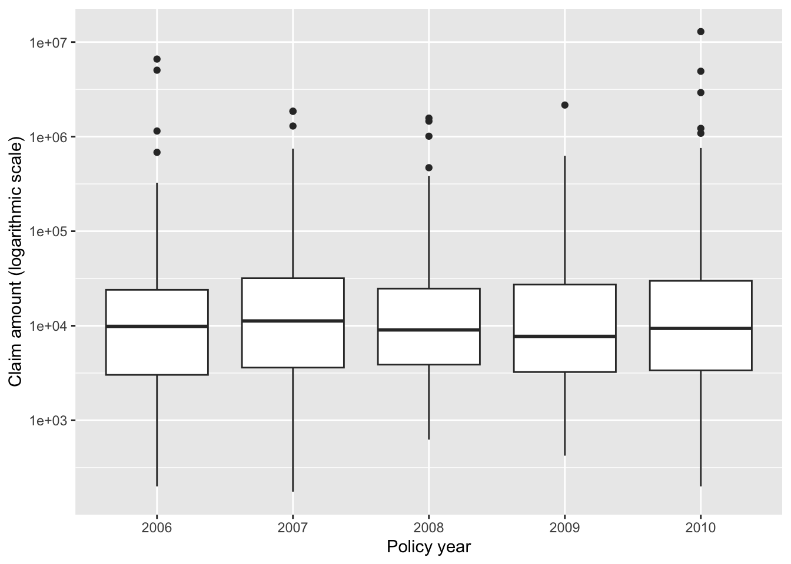
The logarithmic axis compresses large values and expands the visual separation among smaller values. The observations themselves are not changed in the dataset.
This plot excludes zero and negative values, if any. Consequently, it describes the distribution of positive claim amounts rather than the complete claim outcome. The original-scale plot should be retained when the absolute magnitude of large losses is important.
Another option is to examine the logarithm of positive claim amounts directly:
ggplot(
filter(claims, y > 0),
aes(x = factor(Year), y = log(y))
) +
geom_boxplot() +
labs(
x = "Policy year",
y = "Logarithm of claim amount"
)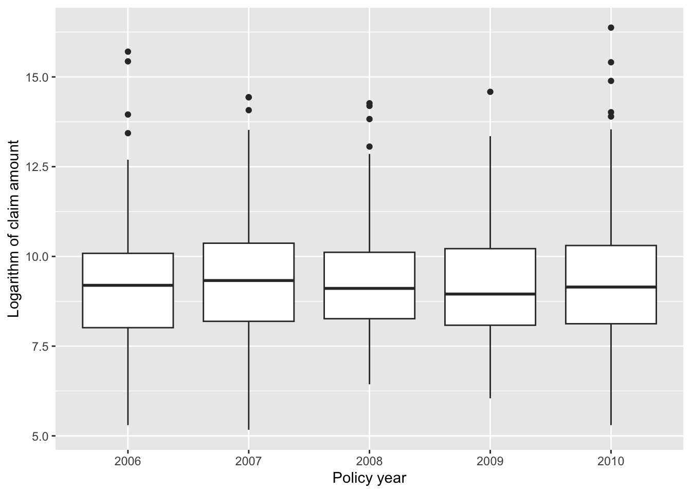
Here, log(y) transforms the variable used to construct the boxplot, whereas scale_y_log10() changes the display scale. Both can help reveal patterns in right-skewed data, but the resulting summaries are expressed on different scales. The logarithm used by log() is the natural logarithm, while scale_y_log10() uses base 10.
Claim frequency is a count variable, often taking values such as zero, one, or two claims. A boxplot can be used to compare claim counts across groups, but it may be less informative when most policies have no claims and only a small proportion have positive counts.
A boxplot of claim frequency by policy year provides a starting point:
ggplot(claims, aes(x = factor(Year), y = Freq)) +
geom_boxplot() +
labs(
x = "Policy year",
y = "Number of claims"
)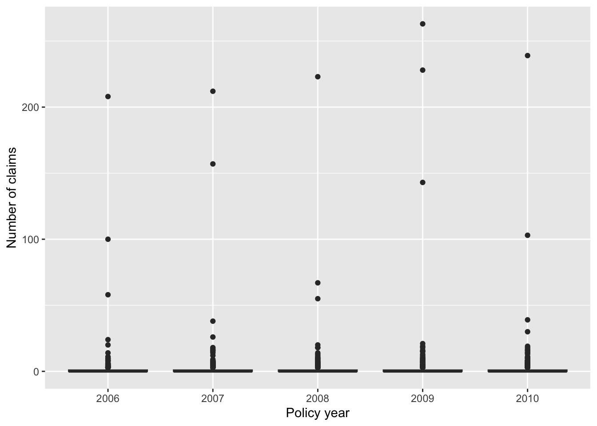
If the distribution is concentrated at zero, the box and median may look similar across years even when the proportions of policies with claims differ. In this situation, comparing the proportion of policies with at least one claim may be more useful.
We can create a binary indicator for whether a policy has any claims and compare the proportions across years.
claims %>%
mutate(HasClaim = Freq > 0) %>%
ggplot(aes(x = factor(Year), fill = HasClaim)) +
geom_bar(position = "fill") +
labs(
x = "Policy year",
y = "Proportion of policies",
fill = "Any claim"
)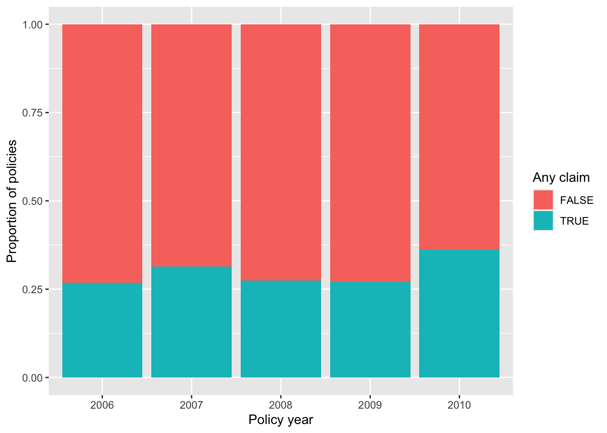
The argument position = "fill" scales each bar to one, so the plot displays proportions rather than counts. This makes it easier to compare the proportion of policies with and without claims across years, even when the number of policies differs between years.
This comparison concerns the probability of observing at least one claim, not the average number of claims per policy. These are different measures of claim frequency and should not be interpreted interchangeably.
Colour can distinguish groups within a single plot. For example, we can compare claim amount distributions across policy years by mapping Year to fill in a boxplot.
Because claim amounts are often strongly right-skewed, a few large claims may compress the boxes on the original scale. We can use a logarithmic vertical axis to make differences among smaller and moderate positive claims easier to see.
ggplot(
filter(claims, y > 0),
aes(x = factor(Year), y = y, fill = factor(Year))
) +
geom_boxplot(show.legend = FALSE) +
scale_y_log10() +
labs(
x = "Policy year",
y = "Claim amount (logarithmic scale)"
)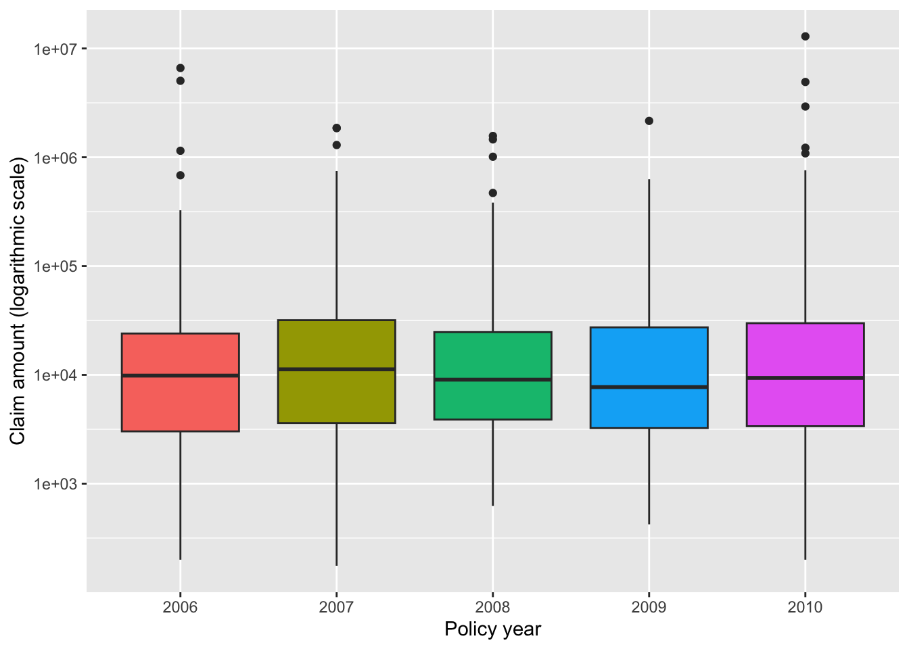
The logarithmic scale makes it easier to compare the distributions of positive claim amounts across years. The observations themselves are unchanged, but differences are displayed proportionally rather than as equal absolute increments. Policies with zero or negative values of y, if any, are excluded from this plot because they cannot be displayed on a logarithmic scale.
In this example, colour distinguishes the years visually. Because the horizontal axis already identifies the groups, the legend is unnecessary and is suppressed with show.legend = FALSE.
When comparing many groups, however, using a different colour for every category can make a plot harder to read. Colour is most useful when it answers a specific question, such as whether claim amounts differ across fire-risk ratings or policy types.
When a plot contains several groups, their observations may overlap or the display may become cluttered. Faceting creates separate panels for different subsets of the data while keeping the same basic plot structure.
The function facet_wrap() arranges panels for the levels of one grouping variable. In the claims dataset, Year can be used to compare the relationship between insurance coverage and claim amount across policy years.
We begin with the original claim amounts to see how the large claims affect the overall pattern.
ggplot(claims, aes(x = LnCoverage, y = y)) +
geom_point(alpha = 0.4) +
geom_smooth(method = "lm", se = FALSE) +
facet_wrap(~ Year) +
labs(
x = "Logarithm of coverage",
y = "Claim amount"
)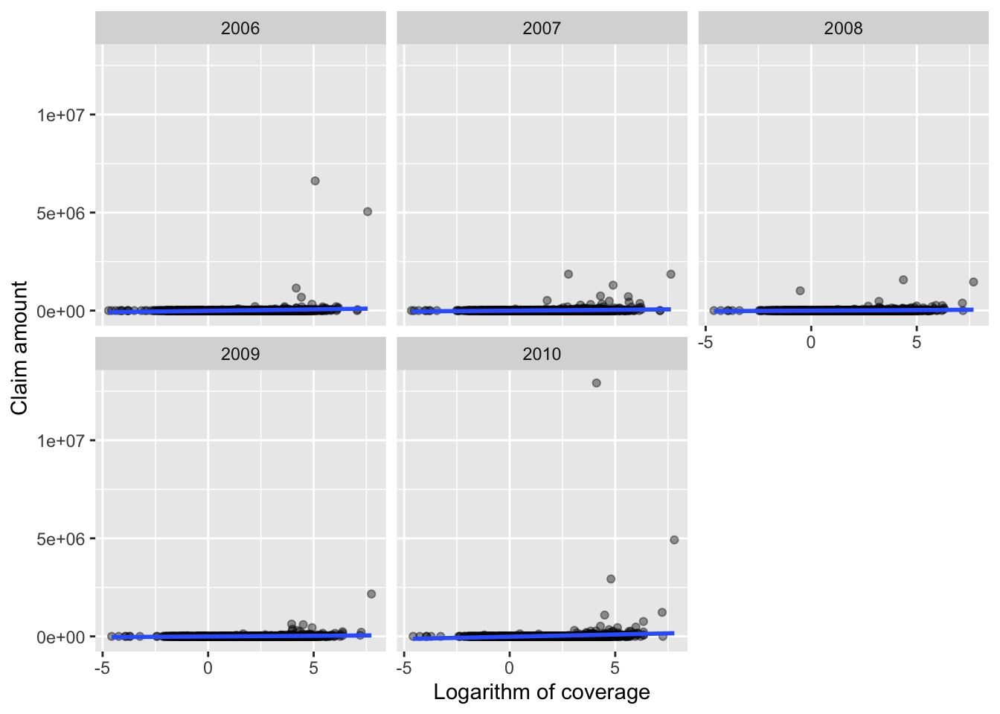
Large claims may dominate the vertical scale, making patterns among smaller claims difficult to see. If the objective is to examine the relationship among positive claim amounts, we can improve the display using a logarithmic vertical axis.
ggplot(
filter(claims, y > 0),
aes(x = LnCoverage, y = y)
) +
geom_point(alpha = 0.4) +
geom_smooth(method = "lm", se = FALSE) +
facet_wrap(~ Year) +
scale_y_log10() +
labs(
x = "Logarithm of coverage",
y = "Claim amount (logarithmic scale)"
)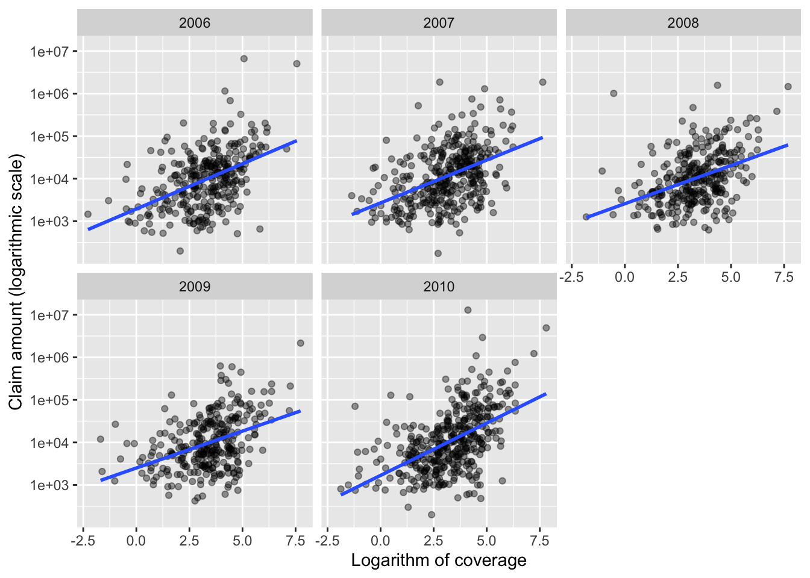
Each panel displays the relationship between coverage and positive claim amount for a particular year. The fitted lines allow us to compare the direction of the relationships across years without placing all observations in the same plotting area.
The panels use a common scale by default, making direct visual comparison easier. The logarithmic axis compresses large claim amounts, but the fitted lines are still estimated on the original response scale because only the display scale has changed. Thus, these lines are linear regression fits for y, not for log(y). If the objective is to model the logarithm of claim amount, the response must be transformed explicitly.
The function facet_grid() arranges panels according to two grouping variables, typically using rows for one variable and columns for another. The claims dataset contains Fire5, which records the fire-risk rating, and Year. We can use these variables to examine whether the relationship between coverage and positive claim amount differs across years and fire-risk ratings.
ggplot(
filter(claims, y > 0),
aes(x = LnCoverage, y = y)
) +
geom_point(alpha = 0.4) +
geom_smooth(method = "lm", se = FALSE) +
facet_grid(Fire5 ~ Year) +
scale_y_log10() +
labs(
x = "Logarithm of coverage",
y = "Claim amount (logarithmic scale)",
caption = "Fire5 is the fire-risk rating."
)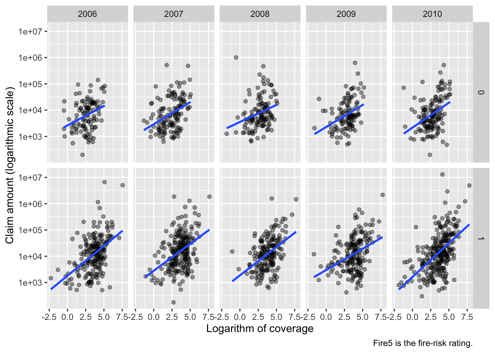
This creates a grid with fire-risk ratings in rows and policy years in columns. It allows us to compare patterns across combinations of these characteristics. However, if there are many distinct ratings or years, the plot may contain too many small panels. In that case, using facet_wrap(~ Year) may be easier to interpret.
Faceting is particularly useful when a single plot becomes cluttered. It also makes it easier to identify whether a pattern is consistent across groups or appears only within particular subgroups. Nevertheless, differences observed in these plots are descriptive and do not establish that a policy characteristic causes differences in claim amounts.
A dataset may represent a categorical variable using several indicator columns, with each column indicating whether an observation belongs to a particular category. For example, the claims dataset contains six policy-type variables: TypeCity, TypeCounty, TypeMisc, TypeSchool, TypeTown, and TypeVillage.
If each policy belongs to exactly one entity type, we can combine these indicators into a single categorical variable called EntityType. The case_when() function from dplyr allows us to specify the category corresponding to each indicator.
claims <- claims %>%
mutate(
EntityType = case_when(
TypeCity == 1 ~ "City",
TypeCounty == 1 ~ "County",
TypeMisc == 1 ~ "Misc",
TypeSchool == 1 ~ "School",
TypeTown == 1 ~ "Town",
TypeVillage == 1 ~ "Village",
TRUE ~ NA_character_
)
)The new EntityType variable identifies the policy’s entity type. Unlike pivot_longer(), this operation does not expand the dataset: each policy remains one row, and the number of observations is unchanged.
We can now compare claim amounts across entity types using facet_wrap(). Since claim amounts may be strongly right-skewed, we use a logarithmic vertical axis to make differences among positive claim amounts easier to examine.
ggplot(
filter(claims, y > 0),
aes(x = factor(Year), y = y)
) +
geom_boxplot() +
facet_wrap(~ EntityType) +
scale_y_log10() +
labs(
x = "Policy year",
y = "Claim amount (logarithmic scale)",
title = "Claim amounts by entity type and year"
)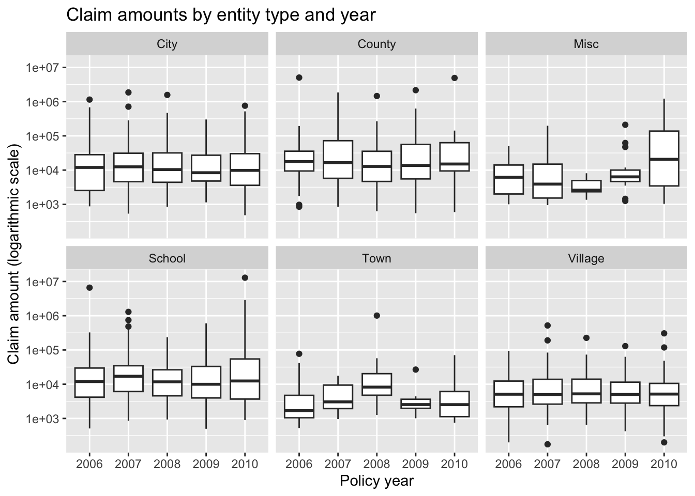
Each panel represents an entity type, while the horizontal axis compares policy years. The common vertical scale supports comparisons across panels. Because the plot uses a logarithmic scale, policies with zero or negative claim amounts are excluded.
This example illustrates how preparing a suitable grouping variable can make a plot easier to construct and interpret. Before using case_when(), however, we should verify that the indicator columns are mutually exclusive and that each policy has exactly one active entity-type indicator. Otherwise, the resulting category may be missing or may not represent the policy correctly.
Check the new grouping variable
Use count() to examine the number of policies in each entity type.
count(claims, EntityType)# A tibble: 6 × 2
EntityType n
<chr> <int>
1 City 793
2 County 328
3 Misc 609
4 School 1597
5 Town 971
6 Village 1341Then compare the number of rows before and after creating EntityType.
nrow(claims)[1] 5639Does every policy have an assigned entity type? Does the total number of policies remain unchanged? If EntityType contains missing values, investigate whether some policies have no active type indicator.
Data are sometimes stored in wide format, where repeated measurements appear in separate columns. For example, a dataset may have one row per policy and a separate column for the claim amount recorded in each year. Although this format can be convenient for viewing data, long format is often more suitable for visualization and analysis with ggplot2.
We will use the claims dataset to demonstrate how to reshape selected variables from wide format to long format without averaging or discarding the original claim amounts.
First, select the policy identifier, year, and claim amount. We then use pivot_wider() to create a separate column for each year.
library(tidyverse)
claims_wide <- claims %>%
select(PolicyNum, Year, y) %>%
pivot_wider(
names_from = Year,
values_from = y,
names_prefix = "Year_"
)
claims_wide# A tibble: 1,227 × 6
PolicyNum Year_2006 Year_2007 Year_2008 Year_2009 Year_2010
<dbl> <dbl> <dbl> <dbl> <dbl> <dbl>
1 120002 0 0 0 0 6839.
2 120003 0 15500 8775 37471. 9711.
3 120004 13003. 32733. 0 42600. 10324.
4 120005 0 144005. 0 27481. 0
5 120008 48061. 2250 713. 12015. 3470.
6 120009 0 0 0 5474. 0
7 120010 NA NA NA 20110. 35000
8 120012 55273. 366403. 47562. 157402. 83935.
9 120013 20169. 13102. 41266. 0 63530.
10 120015 194133. 26820. 52867. 36411. 38117.
# ℹ 1,217 more rowsEach row represents a policy, while columns such as Year_2010 and Year_2011 contain the corresponding claim amounts. Some cells may contain NA because a policy has no recorded observation for a particular year.
We can use pivot_longer() to combine the year-specific columns into a single year variable and a single claim-amount variable.
claims_long <- claims_wide %>%
pivot_longer(
cols = starts_with("Year_"),
names_to = "Year",
names_prefix = "Year_",
values_to = "ClaimAmount"
) %>%
mutate(Year = as.integer(Year))
claims_long# A tibble: 6,135 × 3
PolicyNum Year ClaimAmount
<dbl> <int> <dbl>
1 120002 2006 0
2 120002 2007 0
3 120002 2008 0
4 120002 2009 0
5 120002 2010 6839.
6 120003 2006 0
7 120003 2007 15500
8 120003 2008 8775
9 120003 2009 37471.
10 120003 2010 9711.
# ℹ 6,125 more rowsThe resulting dataset contains three variables: PolicyNum, Year, and ClaimAmount. Each row represents a policy-year combination. The original claim amounts are retained, and missing values remain NA.
Why reshape data into long format?
When measurements for different years are stored in separate columns, comparing their distributions with ggplot2 can require additional data manipulation or separate plotting commands. Reshaping the data into long format places the measurements in a single column and identifies their groups in another column. This structure makes it easier to compare distributions across years using a single plotting command, such as geom_boxplot(), with Year mapped to the \(x\)-axis.
We can now compare the distributions of positive claim amounts across years using boxplots.
ggplot(
filter(claims_long, ClaimAmount > 0),
aes(x = factor(Year), y = ClaimAmount)
) +
geom_boxplot() +
scale_y_log10() +
labs(
x = "Year",
y = "Claim amount (logarithmic scale)",
title = "Distribution of Claim Amounts by Year"
)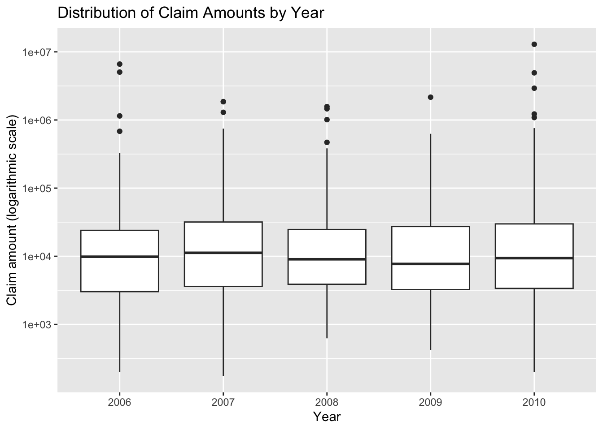
Claim amounts are often strongly right-skewed. A logarithmic display scale makes it easier to examine variation among smaller and larger positive claims. The filter excludes zero, negative, and missing claim amounts from this particular plot.
Reshaping does not change the underlying measurements.
pivot_wider() and pivot_longer() rearrange the data but do not calculate averages or otherwise summarize claim amounts. Missing values remain missing unless they are handled explicitly.
Handling missing values
Before replacing NA with zero, determine why the value is missing. A missing policy-year combination may indicate that no observation was recorded for that year; it does not automatically mean that the claim amount was zero.
If a missing combination is known to represent zero claims, pivot_wider() can fill these combinations with zero using values_fill = 0. Otherwise, retain NA or handle missing values according to the purpose of the analysis. Also distinguish absent policy-year combinations from NA values already present in the original data.
The following guidelines summarize the main choices.
| Objective | Suitable plot |
|---|---|
| Compare counts across categories | Bar chart using geom_bar() |
| Compare proportions across categories | Proportional bar chart using position = "fill" |
| Compare the distributions of claim amounts across years or risk groups | Boxplot using geom_boxplot() |
| Compare relationships between coverage and claim amount across years | Scatterplot with colour mappings or facets |
| Compare patterns across two policy characteristics | facet_grid() |
The most informative plot depends on the question being asked. For example, comparing the average number of claims per policy is different from comparing the proportion of policies with at least one claim. Similarly, comparing typical claim amounts is different from comparing overall claim costs, which may be strongly influenced by a few large losses.
In actuarial analysis, plots should therefore be selected to match the measure of interest and interpreted in the context of the underlying insurance process. These comparisons provide useful exploratory evidence for deciding which variables and group differences may warrant further investigation through statistical models.
A plot should communicate its main message clearly. Appropriate labels, scales, colours, and themes help readers understand what is being displayed without distracting them from the data. In actuarial work, these choices are particularly important when comparing claim experience across groups or displaying variables with highly skewed distributions.
Axis labels should describe the variables being displayed, including their units where appropriate. A descriptive title can communicate the purpose of the plot, while a subtitle can provide additional context.
The labs() function sets the plot title, subtitle, axis labels, legend title, and caption.
library(ggplot2)
library(readr)
ggplot(claims, aes(x = LnCoverage, y = y)) +
geom_point(alpha = 0.5) +
labs(
title = "Insurance Coverage and Claim Amount",
subtitle = "Observed claims in the insurance portfolio",
x = "Log Insurance Coverage",
y = "Claim Amount",
caption = "Source: ClaimsExperienceData.csv"
)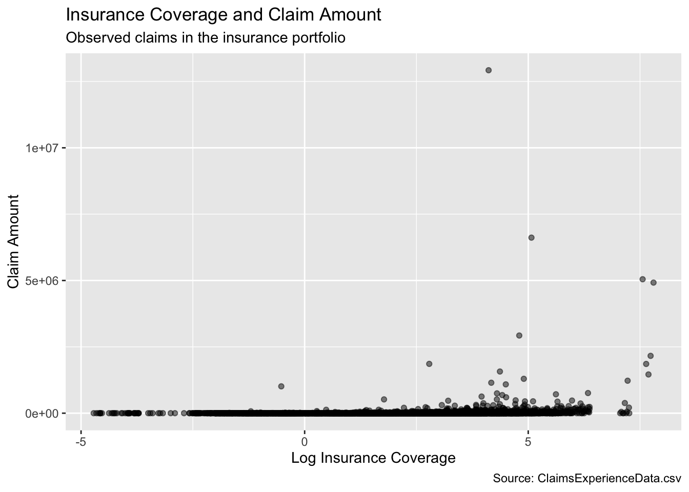
The axis labels should reflect the variables actually plotted. Here, LnCoverage represents the logarithm of coverage, so labelling it simply as “Insurance Coverage” would be potentially misleading. Similarly, if y is measured in monetary units, the vertical axis should identify the currency when this information is available.
Titles and captions should add useful context rather than repeat information already obvious from the plot.
When an aesthetic is mapped to a variable, ggplot2 usually creates a legend automatically. The legend explains how visual properties such as colour, fill, shape, or size represent values in the data.
For example, we can use colour to distinguish observations by year.
ggplot(claims, aes(x = LnCoverage, y = y, colour = factor(Year))) +
geom_point(alpha = 0.6) +
labs(
title = "Claim Amount and Insurance Coverage by Year",
x = "Log Insurance Coverage",
y = "Claim Amount",
colour = "Year"
)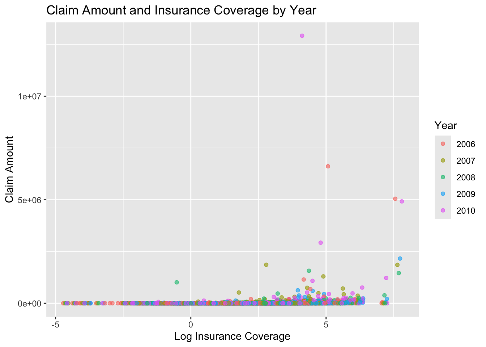
Converting Year to a factor treats it as a categorical variable, giving each year a separate colour. This is appropriate when the purpose is to compare years as distinct groups. If the objective is to emphasize a continuous progression over time, a continuous colour scale may be more suitable.
The labs() function can also rename the legend title. When a legend is unnecessary, it can be removed with theme(legend.position = "none"), provided that the meaning of the visual encoding remains clear.
Scales determine how data values are translated into visual properties and how those properties are labelled. Discrete scales are used for categorical values, whereas continuous scales are used for numerical values.
For example, the following plot uses a discrete colour scale to distinguish policy years.
ggplot(claims, aes(x = LnCoverage, y = y, colour = factor(Year))) +
geom_point() +
scale_colour_brewer(palette = "Dark2") +
labs(
x = "Log Insurance Coverage",
y = "Claim Amount",
colour = "Policy Year"
)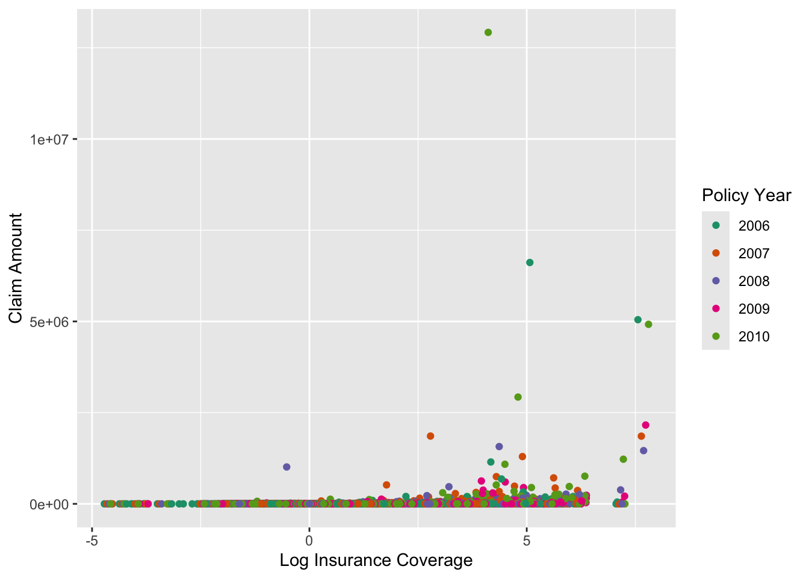
For a categorical variable, scale_colour_brewer() provides a palette designed for distinguishing groups. Other options include scale_colour_manual(), which allows specific colours to be assigned to categories.
Choosing a colour scale
Use scale_colour_brewer(palette = "Dark2") to customize the colours used to distinguish categories, such as different policy years. Choose a colour palette that makes the groups easy to distinguish.
The distinction between colour and fill is also useful. The colour aesthetic controls outlines and lines, as well as the colour of points, whereas fill controls the interior of filled shapes and areas. For example, geom_bar() uses fill to colour the bars and colour to control their outlines.
ggplot(claims, aes(x = factor(Fire5))) +
geom_bar(
fill = "steelblue",
colour = "white"
) +
labs(
x = "Fire Protection Rating",
y = "Number of Policies",
title = "Number of Policies by Fire Protection Rating"
)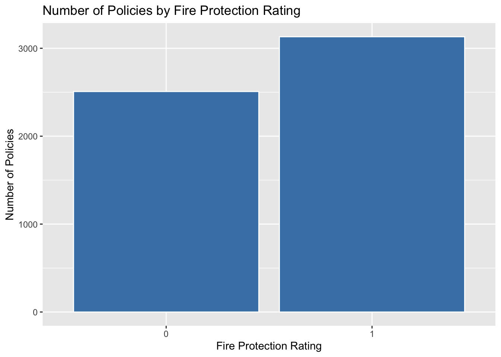
Here, fill = "steelblue" and colour = "white" are fixed settings, not mappings to variables. All bars have the same fill and outline colours, so no legend is produced.
Continuous scales can be adjusted using functions such as scale_x_continuous() and scale_y_continuous(). For example, breaks can be specified to make the axis easier to read.
ggplot(claims, aes(x = LnCoverage, y = y)) +
geom_point(alpha = 0.5) +
scale_x_continuous(
breaks = seq(0, 15, by = 3)
) +
labs(
x = "Log Insurance Coverage",
y = "Claim Amount"
)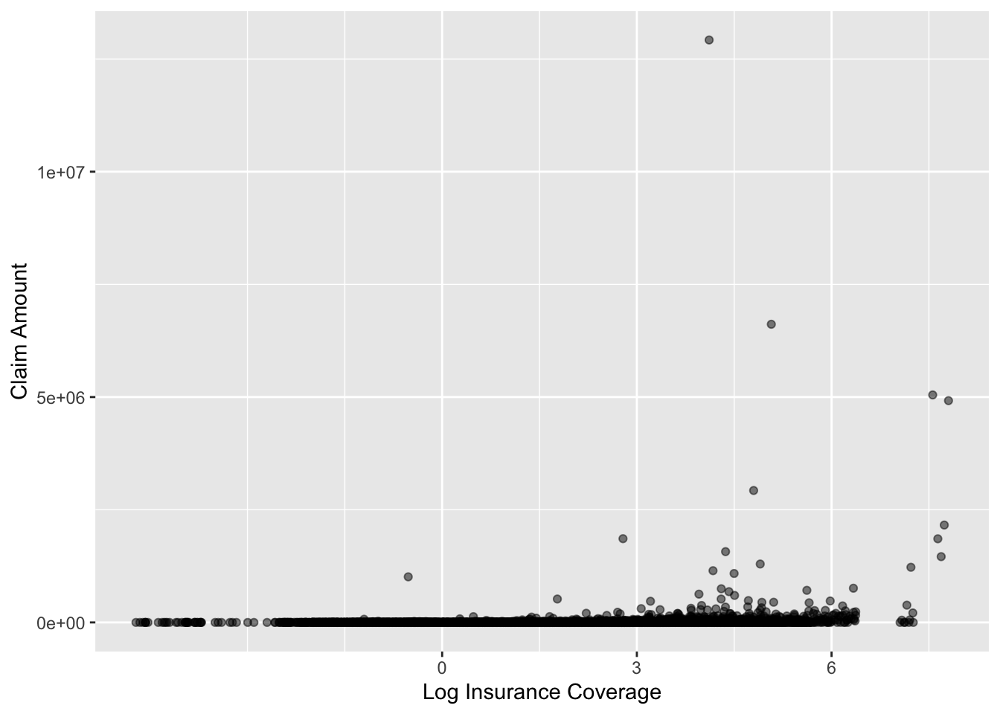
The chosen breaks should suit the observed range of the data. Explicitly specifying breaks is useful when consistent axis markings are required across several plots.
Insurance variables such as claim amounts and coverage often have right-skewed distributions. A small number of very large observations can make the majority of observations difficult to distinguish on the original scale. A logarithmic scale can help reveal patterns across a wide range of values.
For example, we can compare claim amounts using the original and logarithmic vertical scales.
ggplot(claims, aes(x = LnCoverage, y = y)) +
geom_point(alpha = 0.5) +
scale_y_log10() +
labs(
title = "Claim Amount on a Logarithmic Scale",
x = "Log Insurance Coverage",
y = "Claim Amount (logarithmic scale)"
)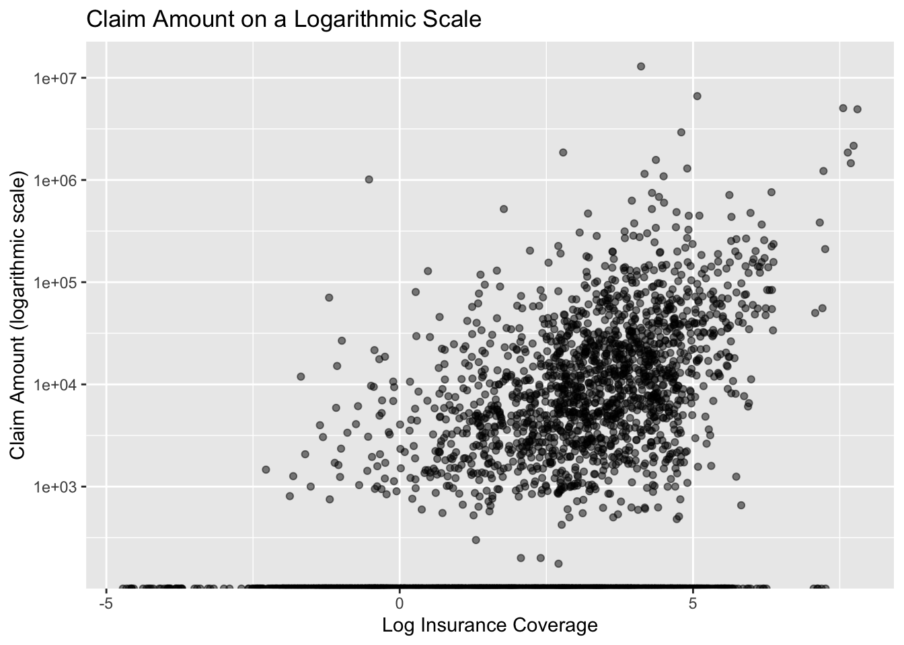
The function scale_y_log10() transforms the vertical axis to a base-10 logarithmic scale. Equal distances on this axis represent equal multiplicative changes in claim amount, rather than equal additive changes.
A logarithmic scale can make variation among smaller and medium-sized claims easier to see when some claims are much larger than others. However, it changes the visual interpretation of distances and does not remove extreme observations.
Important: A logarithmic scale requires positive values. Zero and negative claim amounts cannot be represented on a standard logarithmic scale. If zero claims are present, they must be handled according to the analytical objective rather than silently removed. For example, a plot of positive claim amounts may be appropriate when studying claim severity, but it does not describe the distribution of claim amounts including zero observations.
A logarithmic scale also differs from transforming the variable itself. With scale_y_log10(), the axis is transformed for display while the original variable remains in the data. By contrast, using aes(y = log10(y)) plots the transformed values directly, so the axis labels and interpretation change accordingly.
Themes control the non-data elements of a plot, including background, grid lines, text, and legend placement. They help maintain a consistent appearance across figures.
ggplot2 provides several built-in themes, including theme_minimal(), theme_classic(), and theme_bw().
ggplot(claims, aes(x = LnCoverage, y = y)) +
geom_point(alpha = 0.5) +
labs(
title = "Insurance Coverage and Claim Amount",
x = "Log Insurance Coverage",
y = "Claim Amount"
) +
theme_minimal()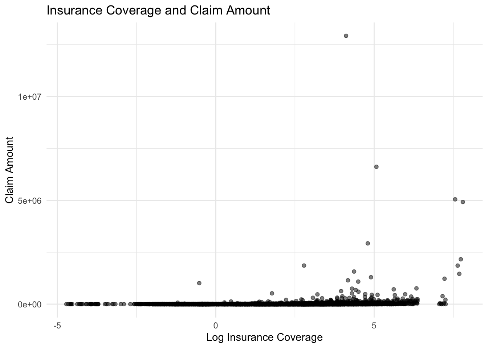
A theme can be modified further using theme(). For example, we can increase the title size and position the legend below the plot.
ggplot(claims, aes(x = LnCoverage, y = y, colour = factor(Year))) +
geom_point(alpha = 0.5) +
labs(
title = "Claim Amount and Coverage by Year",
x = "Log Insurance Coverage",
y = "Claim Amount",
colour = "Year"
) +
theme_minimal() +
theme(
plot.title = element_text(face = "bold", size = 14),
legend.position = "bottom"
)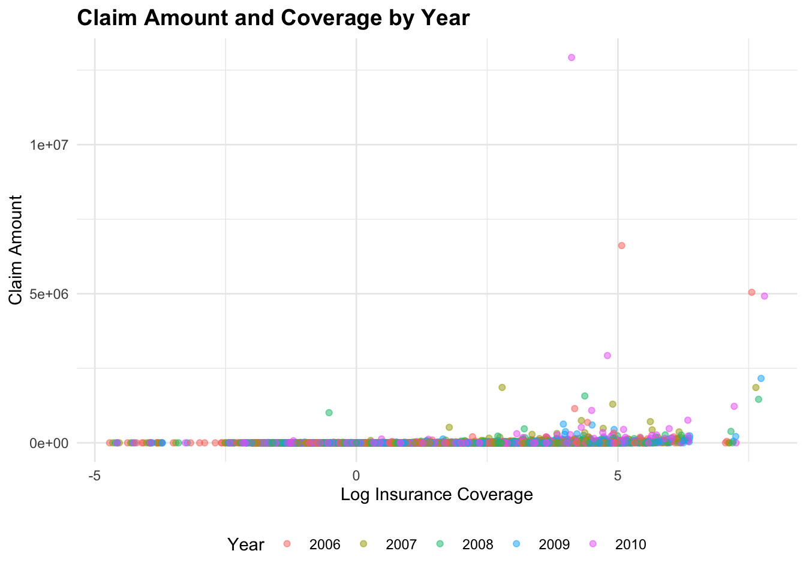
The theme() function changes presentation without altering the underlying data or statistical calculations. The same theme can be applied to multiple plots to maintain consistency throughout a report.
Good presentation should support interpretation. Excessive grid lines, unnecessary colours, oversized titles, and decorative effects can compete with the data. Use visual emphasis only when it helps readers identify important features.
Coordinate systems control how a plot is displayed. The coord_cartesian() function allows us to focus on a particular region of a plot without removing observations from the underlying data used in statistical layers.
For example, suppose we want to inspect the relationship among claims below a particular amount.
ggplot(claims, aes(x = LnCoverage, y = y)) +
geom_point(alpha = 0.5) +
coord_cartesian(ylim = c(0, 50000)) +
labs(
x = "Log Insurance Coverage",
y = "Claim Amount",
title = "Claim Amounts up to 50,000"
)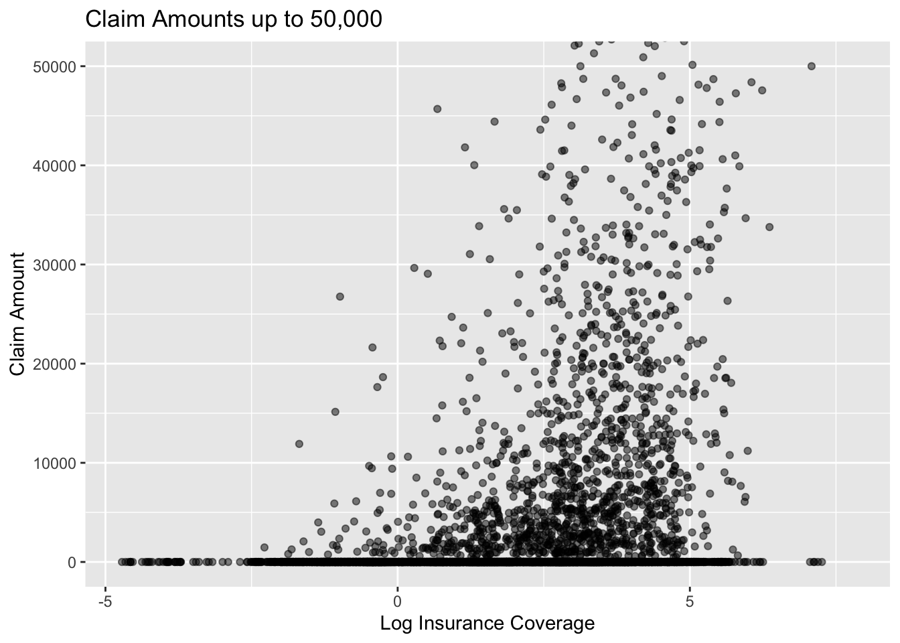
This restricts the displayed vertical range but does not remove observations above 50,000 from the data used to construct the plot. Such observations are outside the visible region.
This differs from filtering the data before plotting. Filtering removes observations from subsequent calculations, whereas coord_cartesian() changes the visible region. This distinction matters when a plot includes statistical summaries, such as a smoothed curve or a fitted trend.
Coordinate transformations should be used when they improve the comparison or interpretation of the data. They should not be used to conceal unusual observations or to create a misleading impression of the results.
When preparing a plot, consider the following principles:
These principles help ensure that a plot is not merely attractive but also statistically informative. In the next section, we bring the techniques together in an actuarial exploratory analysis, using visualizations to formulate questions, investigate claim experience, and identify relationships that may warrant further study through regression modelling.
In this section, we bring together the visualization techniques introduced in this chapter to explore an insurance portfolio. The aim is to use plots to investigate claim experience, identify patterns, and formulate questions for further analysis.
We will use the claims dataset and focus on three questions:
The purpose is not to establish causal relationships or build a predictive model at this stage. Instead, exploratory visualization helps us understand the data and identify relationships worth investigating through regression modelling.
Claim frequency describes the number of claims associated with a policy during a specified period. We begin by examining Freq, which records the number of claims for each policy-year observation.
A bar chart shows the distribution of claim frequency across the portfolio. Since most policy-year observations may have no claims and relatively few may have many claims, we group frequencies of 10 or more into a single category.
library(dplyr)
claims %>%
mutate(
FreqGroup = if_else(Freq >= 10, "10+", as.character(Freq)),
FreqGroup = factor(
FreqGroup,
levels = c(as.character(0:9), "10+")
)
) %>%
ggplot(aes(x = FreqGroup)) +
geom_bar(fill = "steelblue", colour = "white") +
labs(
title = "Distribution of Claim Frequency",
x = "Number of Claims",
y = "Number of Policy-Year Observations"
) +
theme_minimal()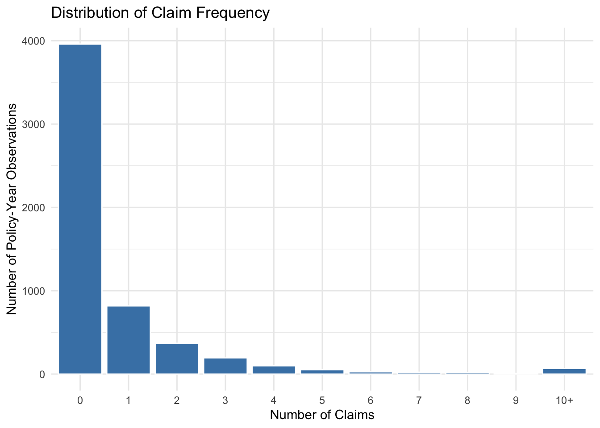
The 10+ category combines all policy-year observations with at least 10 claims. This improves readability while retaining the distinction between common claim counts and the upper tail of the distribution.
We can then investigate whether the distribution of claim frequency differs across years. Because the number of observations may vary by year, comparing counts alone may be misleading. A proportional bar chart allows us to compare the relative distribution of claim frequency in each year.
claims %>%
mutate(
FreqGroup = if_else(Freq >= 10, "10+", as.character(Freq)),
FreqGroup = factor(
FreqGroup,
levels = c(as.character(0:9), "10+")
)
) %>%
ggplot(aes(x = factor(Year), fill = FreqGroup)) +
geom_bar(position = "fill") +
labs(
title = "Distribution of Claim Frequency by Year",
x = "Year",
y = "Proportion of Policy-Year Observations",
fill = "Number of Claims"
) +
theme_minimal()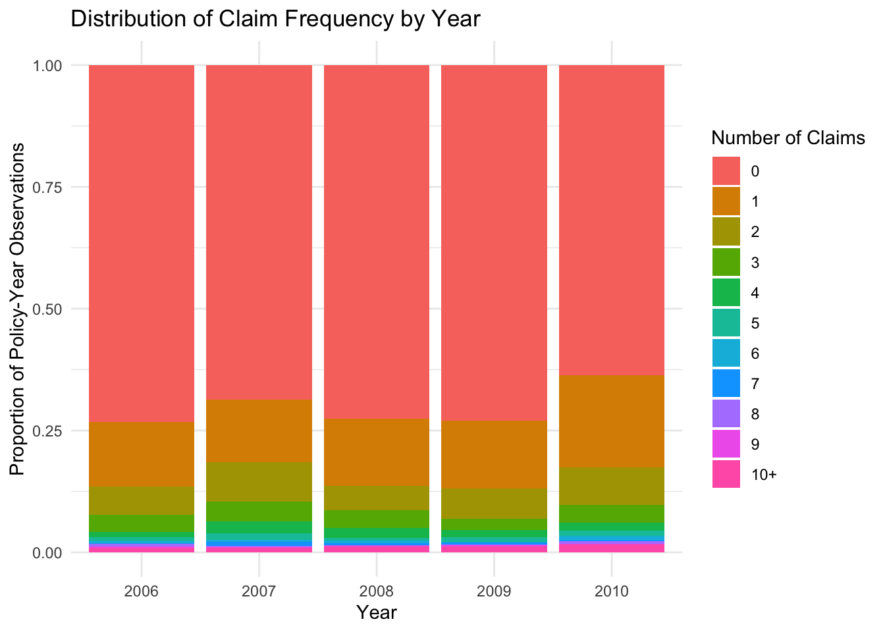
Each bar represents one year and sums to 1. The coloured segments show the proportion of policy-year observations with each claim frequency. This makes it easier to compare the distributions across years even when the total number of observations differs.
An important feature to examine is the proportion of observations with zero claims compared with those having one or more claims. We can also investigate whether the relative frequency of higher claim counts changes over time. Any apparent differences should be interpreted in the context of the portfolio and the number of observations available in each year.
For a more focused comparison, we can examine the proportion of policy-year observations with at least one claim.
claims %>%
group_by(Year) %>%
summarise(
ProportionWithClaims = mean(Freq > 0, na.rm = TRUE),
.groups = "drop"
) %>%
ggplot(aes(x = Year, y = ProportionWithClaims)) +
geom_line() +
geom_point(size = 2) +
scale_y_continuous(labels = scales::label_percent()) +
labs(
title = "Proportion of Policy-Year Observations with Claims",
x = "Year",
y = "Proportion with at Least One Claim"
) +
theme_minimal()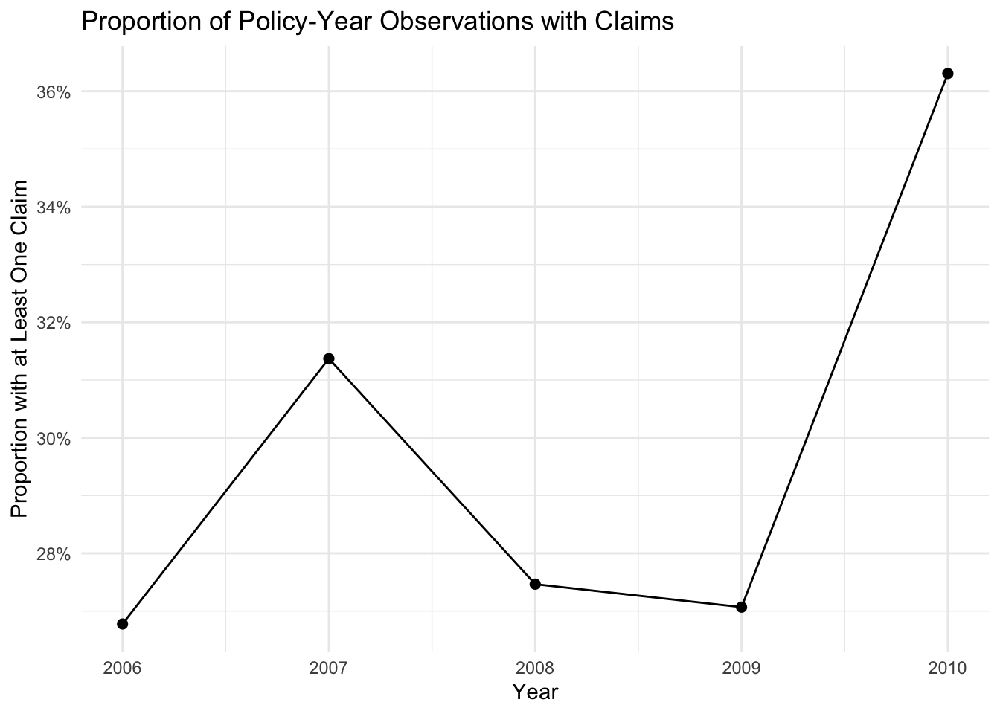
This plot focuses on claim occurrence rather than the full distribution of claim counts. It helps identify whether the proportion of policy-year observations with at least one claim appears to increase, decrease, or remain relatively stable over time.
These plots describe different aspects of claim frequency: the first shows the overall distribution, the second compares the full distribution across years, and the third focuses on whether any claim occurred. Together, they provide a useful starting point for investigating changes in insurance claim experience.
Note: These comparisons assume that each row represents a policy-year observation and that Freq is the claim count for that observation. Missing claim counts should be investigated rather than automatically treated as zero. If the same policy appears in multiple years, the observations are repeated policy-year records rather than independent policyholders.
Claim severity concerns the amount paid or incurred per claim. Unlike claim frequency, which is a non-negative count, claim amounts are quantitative monetary values and often exhibit substantial right-skewness.
We can begin by examining the distribution of yAvg, the average claim amount recorded in the dataset.
ggplot(claims, aes(x = yAvg)) +
geom_histogram(
bins = 30,
fill = "steelblue",
colour = "white"
) +
labs(
title = "Distribution of Average Claim Amount",
x = "Average Claim Amount",
y = "Number of Observations"
) +
theme_minimal()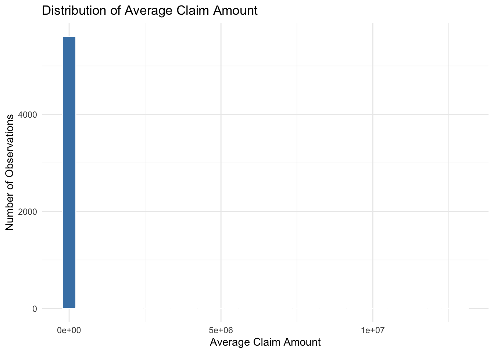
A right-skewed distribution has most observations concentrated at relatively low values and a long tail extending towards larger amounts. A small number of large claims may stretch the horizontal axis, making the variation among typical claims difficult to see.
A logarithmic scale can help reveal this variation. Because a logarithmic scale requires positive values, we restrict the following plot to observations with positive average claim amounts.
claims %>%
filter(!is.na(yAvg), yAvg > 0) %>%
ggplot(aes(x = yAvg)) +
geom_histogram(
bins = 30,
fill = "steelblue",
colour = "white"
) +
scale_x_log10() +
labs(
title = "Distribution of Average Claim Amount",
subtitle = "Positive average claim amounts on a logarithmic scale",
x = "Average Claim Amount (logarithmic scale)",
y = "Number of Observations"
) +
theme_minimal()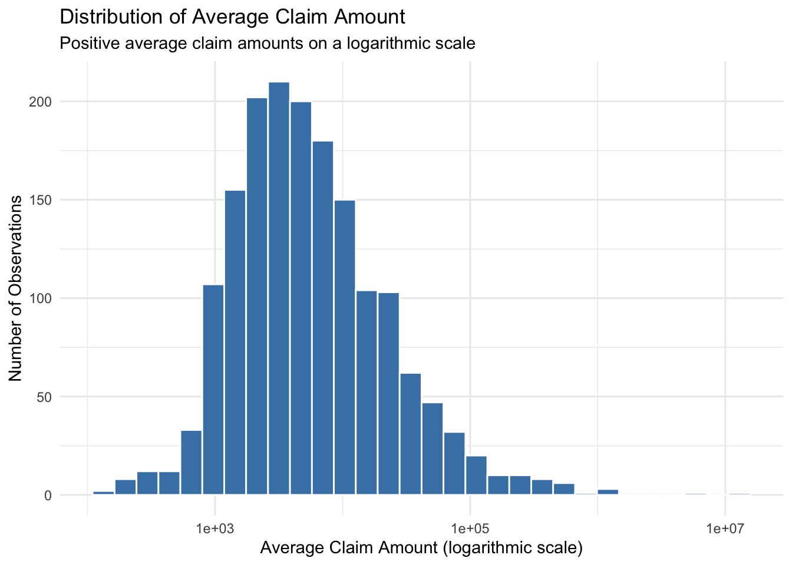
The logarithmic scale makes multiplicative differences easier to compare. However, this plot excludes zero and missing values of yAvg, so it should not be interpreted as the complete distribution of average claim amounts. Large claims should not automatically be treated as data errors; they may represent genuine insurance losses that deserve further investigation.
An insurer may also wish to understand whether claim amounts vary with insurance coverage. We can explore this relationship using LnCoverage and y.
ggplot(claims, aes(x = LnCoverage, y = y)) +
geom_point(alpha = 0.5) +
labs(
title = "Insurance Coverage and Claim Amount",
x = "Log Insurance Coverage",
y = "Claim Amount"
) +
theme_minimal()
Each point represents an observation. Transparency (alpha = 0.5) helps reveal overlapping points when many observations have similar values.
Claim amounts may be highly right-skewed, so a few large claims can dominate the vertical scale. If the claim amounts are positive for the observations of interest, a logarithmic vertical scale can help us examine the relationship more closely.
claims %>%
filter(!is.na(y), y > 0, !is.na(LnCoverage)) %>%
ggplot(aes(x = LnCoverage, y = y)) +
geom_point(alpha = 0.5) +
scale_y_log10() +
geom_smooth(method = "loess", se = FALSE) +
labs(
title = "Insurance Coverage and Positive Claim Amounts",
subtitle = "Logarithmic vertical scale with a smoothed trend",
x = "Log Insurance Coverage",
y = "Claim Amount (logarithmic scale)"
) +
theme_minimal()The smooth curve summarizes the general pattern in the observed data. It can help identify whether claim amounts tend to increase, decrease, or show a nonlinear pattern across coverage levels. The curve is exploratory rather than a fitted actuarial model.
The plot includes only positive claim amounts with observed coverage. It therefore does not describe the probability of making a claim. Moreover, an apparent relationship between coverage and claim amount does not establish that coverage causes larger claims; other policy characteristics may also be associated with the observed pattern.
The plots provide an initial understanding of the portfolio and suggest several questions for further investigation:
These questions can motivate regression models, but the appropriate response variable and modelling approach depend on the question. Claim frequency is a count outcome, whereas claim severity concerns claim amounts. A model for claim occurrence, a count model, and a severity model address different aspects of insurance experience.
Exploratory visualization is therefore an important first step in actuarial modelling. It helps formulate meaningful questions, identify unusual observations, and guide the selection of variables and modelling approaches. The next step is to use statistical models to quantify relationships and assess their predictive performance.